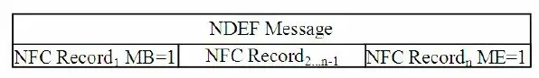
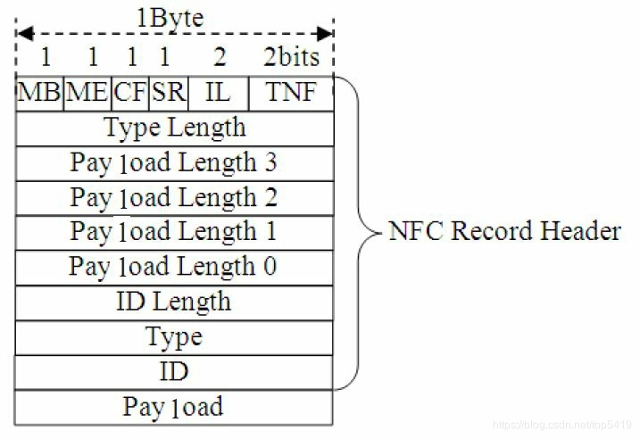
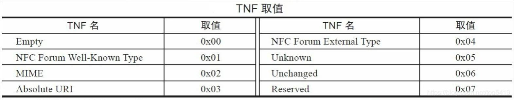
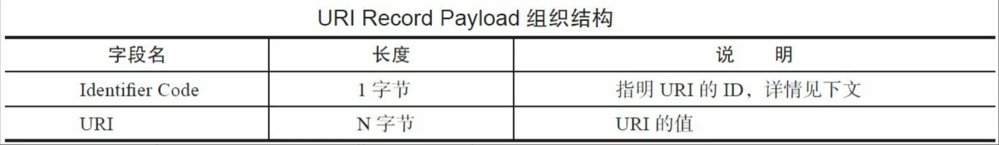
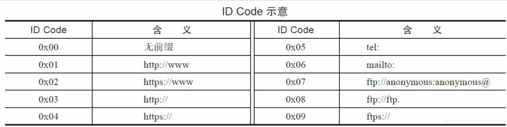
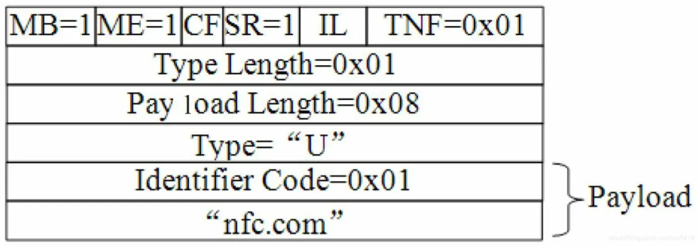
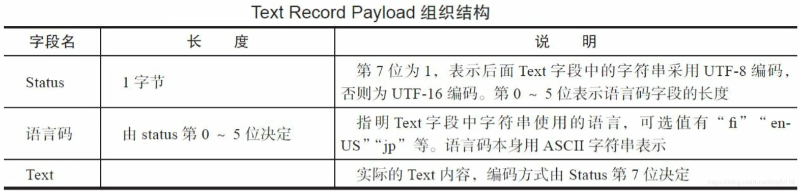
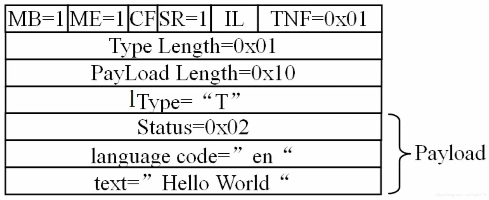

如何使用 mdbook
官方文档：mdBook Documentation
https://rust-lang.github.io/mdBook/
配置文件
book.toml
# 设置 mdbook build 的输出路径
[build]
build-dir = "specific-output-path"
自动编译文档
打开两个终端：
- 第一个运行
mdbook serve，此命令会监控src目录中的变化，每次发生变化时都会重新构建。 - 第二个运行
mdbook watch，此命令监控文件，并在修改任何文件时自动触发构建。
文档结构
🏆🏆🏆 参见官方文档 format - summary 章节
官方文档的 SUMMARY.md 的内容如下，这展示了一个标准的文档结构。
# Summary
[Introduction](README.md)
# User guide
- [Installation](guide/installation.md)
- [Reading books](guide/reading.md)
- [Creating a book](guide/creating.md)
# Reference guide
- [Command-line tool](cli/README.md)
- [init](cli/init.md)
- [build](cli/build.md)
- [watch](cli/watch.md)
- [serve](cli/serve.md)
- [test](cli/test.md)
- [clean](cli/clean.md)
- [completions](cli/completions.md)
- [Format](format/README.md)
- [SUMMARY.md](format/summary.md)
- [Draft chapter]()
- [Configuration](format/configuration/README.md)
- [General](format/configuration/general.md)
- [Preprocessors](format/configuration/preprocessors.md)
- [Renderers](format/configuration/renderers.md)
- [Environment variables](format/configuration/environment-variables.md)
- [Theme](format/theme/README.md)
- [index.hbs](format/theme/index-hbs.md)
- [Syntax highlighting](format/theme/syntax-highlighting.md)
- [Editor](format/theme/editor.md)
- [MathJax support](format/mathjax.md)
- [mdBook-specific features](format/mdbook.md)
- [Markdown](format/markdown.md)
- [Continuous integration](continuous-integration.md)
- [For developers](for_developers/README.md)
- [Preprocessors](for_developers/preprocessors.md)
- [Alternative backends](for_developers/backends.md)
-----------
[Contributors](misc/contributors.md)
-
标题 - Title
这是可选的，但文档通常以标题开头，一般为
# Summary。不过解析器会忽略它，也可以省略。
-
前置章节 - Prefix Chapter
如上面示例中的
[Introduction](README.md)。在主编号章节之前，可以添加不进行编号的前置章节。这适用于前言、引言等内容。
不过存在一些限制。前置章节不能嵌套，必须全部位于根层级。并且一旦添加了编号章节，就无法再添加前置章节。
-
部分标题 - Part Title
如上面示例中的
# User guide、# Reference guide。一级标题（一个
#）可用作后续带编号章节的标题。这可用于在逻辑上分隔书籍的不同部分。
标题会显示为不可点击的文本。标题为可选内容，带编号的章节可根据需要拆分为多个部分。
部分标题必须是一级标题（一个
#），其他标题级别将被忽略。
-
编号章节 - Numbered Chapter
如上面示例中存在诸如
- [xxxxx](yyyyy.md)这种格式的条目。编号章节概述了书的主要内容，并且可以嵌套，从而形成一个很好的层次结构（章节、子章节等）。
-
后缀章节 - Suffix Chapter
如上面示例中最后的
[Contributors](misc/contributors.md)。与前缀章节类似，后缀章节也没有编号，但它们位于带编号的章节之后。
-
草稿章节 - Draft chapters
如上面示例中的
- [Draft chapter]()草稿章节是指没有对应文件及内容的章节。
设置草稿章节的目的是标记后续待撰写的章节。也可在规划书籍结构时使用，避免在频繁调整书籍结构的过程中反复创建文件。
草稿章节在 HTML 渲染器的目录中会显示为禁用链接。
草稿章节的编写方式与普通章节一致，只需不填写文件路径即可。
-
分隔符 - Separators
如上面示例中的
-----------分隔符可添加在任意其他元素之前、之间和之后。
它们会在生成的目录的 HTML 渲染行中体现。
分隔符是指仅由短横线组成且至少包含三个短横线的行：
---。
图片格式
本博客中插入的图片统一使用 WebP 格式。
使用在线网站 https://squoosh.app/ 进行格式转换。
Git 提交出错了? 后悔了?
Important
以下的命令只要没 git push 到远端
你怎么改、怎么删、怎么撤销 commit 都完全安全，不会影响别人
修改上一次 commit message
- 执行后，最后一次提交的信息就被改掉了，代码不变。
git commit --amend -m "新的commit message"
撤销 commit
-
撤销上一次 commit
-
代码文件还在，变回 git add 之前的状态
-
可以重新修改、重新提交
git reset --mixed HEAD^
撤销最后 N 次 commit
- 可以多次执行
git reset --mixed HEAD^来持续往前撤销 - 也可以直接指定往前撤销指定次数的提交
# 撤销最后 2 次提交
git reset --mixed HEAD~2
# 撤销最后 5 次提交
git reset --mixed HEAD~5
撤销到某个历史版本
- 可以直接撤销到某一个历史版本
git reset --mixed 历史版本的哈希值
彻底撤销最后一次 commit
Warning
⚠️不保留代码，慎用
⚠️ 会直接把代码恢复到上上个版本，当前提交的改动会丢失，本地没推也建议先备份再用。
git reset --hard HEAD^
Linux Document List
环境安装
安装 SSH 服务
-
更新系统
sudo apt update sudo apt upgrade -y -
检查 ssh 服务
sudo systemctl status ssh注意此命令输出信息中
Active的状态，如果显示inactive (dead)则表示 ssh 已经安装了但未启用，则可以执行 第 6 步 设置开机自动启动 ssh 服务。 -
安装 OpenSSH Server
如果显示未安装 ssh 服务，则需要执行这一步
sudo apt install openssh-server -
配置 OpenSSH Server
编辑
/etc/ssh/sshd_config来配置 ssh常见的设置：
- Port：可以将其更改为不同的端口号以获得额外的安全性
- PermitRootLogin：为了安全起见，最好通过将其设置为 no 来禁用 root 登录
- PasswordAuthentication：如果使用公钥身份验证，请将其设置为 no
- AllowUsers：要限制对特定用户的 SSH 访问，请在此处添加用户名，并用空格分隔
-
重新启动 OpenSSH Server
如果修改了 OpenSSH Server 的配置或者刚刚才安装，执行这一步。
sudo systemctl restart ssh -
设置开机自动启动 OpenSSH Server
sudo systemctl enable ssh -
ssh 远程连接这条电脑
可在 windows cmd 使用
ssh 用户名@机器IP
使用主机名进行 ssh 连接
虚拟机一般没有配置静态 IP，使用同样的 IP 访问可能哪天就失效了，而使用主机名就不用担心这个事情了。
环境
宿主机：win10
虚拟机软件：VMware
虚拟机：ubuntu, 网络 - 桥接模式
配置
ubuntu 端设置
-
老习惯，更新
sudo apt-get updatesudo apt-get upgrade -y -
使用
hostname查看主机名 -
安装 Samba
sudo apt install samba -y -
启动并启用 NetBIOS 名称服务 (nmbd) 和 SMB 服务 (smbd)
sudo systemctl enable --now smbd nmbd -
验证. 在 win 主机上 ping 主机名
ssh 连接
在 windows cmd 中输入 ssh 用户名@主机名 连接
MDK5-KEIL代码工程的目录规范
code-Repository
├── docs # 仓库文档
├── libs # 子模块组成的库
| └── submodule_01 # 子模块
├── projects # 存放多个MDK-KEIL工程
| └── prj_01 # 某个MDK-KEIL工程
| ├── mdk-arm # 当前MDK-KEIL工程目录
| | ├── scripts # 当前MDK-KEIL工程编译时使用的脚本
| | | └── target_01 # MDK-KEIL工程可以有多个target, 每个target可以有各自的脚本
| | └── build # 当前MDK-KEIL工程编译输出目录
| | └── target_01 # MDK-KEIL工程可以有多个target, 每个target有各自的输出
| | ├── objects # MDK-KEIL工程的Objects文件夹
| | └── listings # MDK-KEIL工程的Listings文件夹
| ├── src # 当前工程特定源码
| | ├── main # 存放主函数等
| | └── mcu-device # 存放芯片启动文件等 cmsis 标准文件和厂商提供的芯片配置程序
| ├── link # 存放链接脚本, MDK-KEIL中称为分散加载文件
| └── docs # 当前工程的文档
├── tools # 工具软件
└── README.md # 仓库自述文档
仓库根目录
-
docs
-
libs
诸如 MCU SDK 这类，都是以子模块的仓库进行管理的，存放在此目录中
-
projects
-
tools
-
README.md
特定工程目录
-
mdk-arm
-
src
工程特点的源码, 比如芯片的cmsis文件(启动文件，时钟配置), 主函数文件
-
link
将链接脚本直接存放到工程目录而不是 mdk-arm 目录，是为了方便在不同开发环境下能同一观察到链接配置，毕竟更改开发环境时各种数据的存放方式和位置我们还是不想变动的。
推荐直接将链接脚本的名字命名为 target 的名字(+文件拓展名)。
很多情况下一般只有一个 target，推荐此时将这个 target 命名为 target_default
-
docs
mdk-arm 目录
-
scripts
keil 的 “Options for target”(魔术棒) -> “User” 里面支持添加编译前编译后自动执行脚本, 此目录就用来存放这些文件, 比如常用的Hex转bin的处理
-
build
MDK5-KEIL工程虚拟文件夹规范
虚拟文件夹是指如下所示的在 Project 区展示的文件管理方式

虚拟文件夹
src / main | 主函数等 |
src / mcu-device | 芯片启动文件等 cmsis 标准文件和厂商提供的芯片配置程序等。 与芯片外设几乎没有关系(时钟除外)。 |
src / libs | 工程在使用子模块时的一些接口、配置等文件。 |
libs / xxxxx | 子模块源码。 |
docs | 文档。 |
MDK5-KEIL工程 Git 分支管理规范
一、常驻长期分支（固定不变）
仅两条，永久保留，禁止直接在这两个分支手写提交，只允许合并：
main：正式稳定发布分支，随时可编译、可烧录、可发版develop：开发集成分支，所有功能 / 修复 / 子模块变更先合到这里
所有临时开发分支，必须从 develop 迁出，合并完成后立即删除
二、临时开发分支命名规范
Warning
❌ 千万不要重复使用已经删掉的同名分支
标准命名格式
类型/工程/模块
一个分支只做一件事，通过命名就能了解工作内容。
-
类型：使用下面列出的类型词根
-
工程：仓库支持多 KEIL5 单片机工程管理，填入工程名标识在操作哪个工程
-
模块：简单表明这个分支是关于哪个功能的
统一类型词根
| 类型 | 场景 |
|---|---|
| feat | 新增功能/驱动/业务逻辑 |
| fix | 修复Bug、硬件适配、逻辑异常 |
| docs | 文档、注释、README、说明文案调整 |
| style | 代码格式缩进、空格规整，不改变业务逻辑 |
| refactor | 代码重构、结构梳理、函数拆分，无功能增减 |
| perf | 运行性能、功耗、采样速率、时序优化 |
| test | 新增/修改测试代码、仿真例程 |
| build | 工程配置、编译脚本、链接脚本、编译选项 |
| ci | 自动化编译、烧录、部署流水线脚本 |
| chore | 冗余文件清理、目录整理、无关业务杂项 |
| submodule | 子模块新增/更新/删除/仓库地址变更 |
绝不能有同名分支
背景说明：
比如开发某个功能创建了一个临时开发分支，开发完成后合并到 develop 分支顺便删除了这个临时开发分支。后续又想继续开发这个功能时，不能再创建同名的临时开发分支了。
原因说明
-
Git 会混乱
-
删掉的旧分支 = 历史版本
-
新建的同名分支 = 新版本
-
但 Git 会残留历史记录，容易合并出错、冲突乱飞。
-
-
版本追踪会乱
- 别人看日志：
feat/noboot-app/Main这个分支被删了又建、建了又删，完全不知道哪个是最新、哪个是历史。
- 别人看日志：
-
功能已经合并到 develop，它就 “结束了”
- 这个分支的使命已经完成，不应该复活。
标准规范
基础名只用一次，后续迭代加固定后缀，永不复用同名空分支
| 场景 | 后缀 |
|---|---|
| 功能新增 / 扩展 （在原有基础上加新功能） | -extend / -addon |
| 功能优化 / 重构 （不改逻辑，梳理代码、结构、可读性） | -refactor / -optimize |
| 版本迭代大更新 （改动比较大，相当于第二版） | -v2、-v3 依次累加 |
| 修复该功能遗留 Bug | 直接换类型为 fix，复用模块名即可，不用加多余后缀 |
| 适配移植 / 适配新芯片 | -adapt |
| 精简裁剪 / 去掉冗余代码 | -trim |
三、提交信息规范
标准通用格式
临时开发分支名: <简短描述>
提交信息的开头使用临时开发分支名，这样开发完合并之后的时候，从 develop 的日志中可以清楚的梳理开发历史。
示例：
新建了一个统一入口头文件，用来统一管理、调用底层 MCU SDK，做工程标准化收口。
feat/noboot-app/Main: Create mcu-device.h as a common standard entry for accessing the MCU SDK
- 临时开发分支名 - feat/noboot-app//Main
- 描述 - Create mcu-device.h as a common standard entry for accessing the MCU SDK
子模块专属强制格式
submodule/<子模块路径>: <操作> <描述> @<版本信息>
严格规则
- 类型固定：
submodule - 操作仅限 3 种：
add/update/remove - add 必须带：初始版本（tag /hash）
- update 必须带：目标版本（tag /hash）
- 版本格式：
@v1.0.0或@a1b2c3d
示例
-
添加子模块
submodule/libs/STM32_HAL: add official HAL library @v1.8.5 submodule/libs/FreeRTOS/: add RTOS kernel @v10.4.6 -
更新子模块
submodule/libs/STM32_HAL: update bugfix version @v1.8.6 submodule/libs/FreeRTOS: update to latest commit @8e2dc4f -
删除子模块
submodule/libs/Deprecated: remove unused driver submodule
4. PR
Pull Request (PR):
- PR 是在 GitHub 上的术语，用于请求将一个分支的更改合并到另一个分支（通常是主分支或开发分支）。
- 开发者通过 PR 提交代码更改，其他团队成员可以查看、讨论和审查这些更改。
命令形式仿真 PR 操作
Note
当使用 Github、Gitee 等平台时，PR 提供代码审查的功能，但当一个人开发并且不使用这些平台时，可以简化为合并即可，以下提供命令形式的仿真 PR 操作。
当在某个临时开发分支上完成了任务，就可以准备将此分支合并到 develop 分支了。
使用 Git 管理的核心就是：一个分支 = 一个独立任务
-
切换到 接收方 分支
git checkout develop -
合并
git merge feat/noboot-app/Main -
删除临时开发分支
git branch -d feat/noboot-app/Main
Gitee 平台上 PR
-
当在某个临时开发分支上完成了任务，可以将此分支推送到远端仓库。
-
之后在 Gitee 的仓库中点击
Pull Requests，点击新建 Pull Request。选择源分支为此临时开发分支，目标分支为 develop 分支。 -
填写提交信息，创建 Pull Request
-
完成审查、测试。
-
配置合并选项
-
合并选项：合并后删除提交分支（默认不勾选）
一般会选择这个选项，因为这个临时分支的使命已经结束了。
注意，这只是删除了远端仓库中的这个分支，本地的仍需要自己去删除。
-
合并选项：合并后关闭提到的 Issue（默认勾选）
-
合并选项：接受 Pull Request 时使用扁平化 (Squash) 合并
临时开发分支肯定会有多条提交记录，使用 Squash 合并时会将这个分支的多个提交压缩成 1 条提交，使得目标分支历史干净。
不过，因为前面的 提交信息规范 中规定了提交信息必须以分支名开头，就是不使用 Squash 合并的方式，也能一眼看出这些提交是来自同一个功能分支的，不会乱。
-
Note
注意，远端删除了某个分支，本地仓库可不知道远端分支信息改变了，本地分支和远端分支是独立的。
可以执行以下操作来同步分支信息
# 切换到 develop 分支 git checkout develop # 同步远端分支，把已经删除的远端分支标记为已删除 # 清理掉本地记录里那些已经在远端被删除的分支信息 # 让 git branch -a 看起来更干净，但不会影响本地的实际分支。 git fetch --prune # 查看所有分支信息，包括远端的 git branch -a # 如果远端删除了临时开发分支，想把本地分支也删除掉 git branch -d 本地临时开发分支名 # 再次查看所有分支信息，可以看到本地的临时开发分支被删除了 git branch -a
PR 草稿
在创建 Pull Request 的时候，还可以选择创建 PR 草稿。
PR 草稿就是未完成、待完善的半成品 PR，相当于你开了个 “占坑” 的 PR，先让别人看到你在做什么，但还没准备好被合并。
PR 草稿的特点
-
不能被合并
草稿状态的 PR，合并按钮是灰色的，只有你点「标记为可合并」后，才允许别人审核和合并。
-
合开发中、未完成的代码
比如你正在写一个功能，还没写完，但想：
-
先提交上去做备份
-
让别人提前看看思路
-
或者自己先记录一下变更，避免忘记
就可以先创建成草稿 PR。
-
-
可以随时更新、补充
后续继续往这个分支 push 提交，草稿 PR 会自动更新，写完再改成正式 PR 就行。
ARM MCU SDK 仓库规范
调试器 WCH-Link
官方资料
用户手册：WCH-LinkUserManual.PDF - 南京沁恒微电子股份有限公司
上一个资料中打包了用户手册，避免有新的版本，最好都下载看一下
调试器固件: WCH-LinkUtility.ZIP - 南京沁恒微电子股份有限公司
WCH-Link 的固件和用户手册被打包在此资料中
固件更新工具: WCHISPTool_Setup.exe - 南京沁恒微电子股份有限公司
注意: 下载的安装程序名为 WCHISPTool_Setup，安装后软件名为 WCHISPStudio
WCH-Link 系列
Link 功能和性能对比表
（摘自《WCH-Link 使用说明 V2.7》）
| 功能项 | WCH-Link-R1-1v1 | WCH-LinkE-R0-1v3 | WCH-DAPLink-R0-2v0 | WCH-LinkW-R0-1v1 |
|---|---|---|---|---|
| 使用的芯片 | CH549G | CH32V305F | CH32V203G8R | CH32V208G |
| RISC-V 模式 | ✔ | ✔ | ✔ | |
| ARM-SWD 模式-HID 设备 | ✔ | |||
| ARM-SWD 模式-WINUSB 设备 | ✔ | ✔ | ✔ | ✔ |
| ARM-JTAG 模式-HID 设备 | ✔ | |||
| ARM-JTAG 模式-WINUSB 设备 | ✔ | ✔ | ✔ | |
| ModeS 键切换模式 | ✔ | ✔ | ✔ | |
| 两线方式离线升级固件 | ✔ | |||
| 串口离线升级固件 | ✔ | |||
| USB 离线升级固件 | ✔ | ✔ | ✔ | |
| 3.3V/5V 电源输出可控 | ✔ | ✔ | ✔ | |
| 高速 USB2.0 转 JTAG 接口 | ✔ | |||
| 无线模式 | ✔ | |||
| 下载工具 | MounRiver Studio, WCH-LinkUtility, Keil uVision5 | MounRiver Studio, WCH-LinkUtility, Keil uVision5 | WCH-LinkUtility, Keil uVision5 | MounRiver Studio, WCH-LinkUtility, Keil uVision5 |
| Keil 支持版本 | Keil V5.25 及以上 | Keil V5.25 及以上 | 所有版本 Keil 都支持 | Keil V5.25 及以上 |
WCH-Link 串口支持波特率
（摘自《WCH-Link 使用说明 V2.7》）
| 1200 | 2400 | 4800 | 9600 | 14400 |
| 19200 | 38400 | 57600 | 115200 | 230400 |
WCH-LinkE / DAPLink / LinkW 串口支持波特率
（摘自《WCH-Link 使用说明 V2.7》）
| 1200 | 2400 | 4800 | 9600 | 14400 |
| 19200 | 38400 | 57600 | 115200 | 230400 |
| 460800 | 921600 |
WCH-Link-R1-1v1
官方出品
待收录
第三方复刻 YD-Link-D

固件更新
-
获取固件
-
下载 官方资料 中的 “调试器固件 WCH-LinkUtility.ZIP”，解压；
-
如果想让调试器连接 ARM 单片机（烧录成 CMSIS-DAP），使用目录
Firmware_Link中的WCH-Link_APP_IAP_ARM.bin;如果想让调试器连接沁恒的 RSIC-V 单片机，使用目录
Firmware_Link中的WCH-Link_APP_IAP_RV.bin
-
-
安装烧录工具
- 下载 官方资料 中的 “固件更新工具 WCHISPTool_Setup”，安装后得到软件 WCHISPStudio
-
调试进入固件烧录状态
- 调试器不上电，按住调试器上的 ISP 按钮（其实就是BOOT），再使用 USB 线把调试器接入电脑
-
烧录工具配置
- 打开 WCHISPStudio
- “芯片” 选择 CH54x
- “芯片信号” 选择 CH549
- “下载接口” 选择 USB
- “设备列表” 搜索，找到刚刚接入的调试器
- “下载文件 - 目标程序文件1” 定位到步骤 “1.获取固件” 中的固件文件
- “下载配置” 选中清空 CodeFlash
-
烧录
- 点击下载，等待烧录完成
- 拔插 USB 重新接入电脑，查看设备管理器是否识别成功
- 如果烧录 ARM 模式，则调试器上的 A/R 指示灯会点亮
AT32F403A 引脚笔记
I2C
| 引脚 | I2C功能 | 冲突 |
|---|---|---|
| PB6 | I2C1_SCL | SPIM_IO3 TMR4_CH1 USART1_TX I2S1_MCK SPI4_CS I2S4_WS |
| PB8 | I2C1_SCL | SDIO1_D4 TMR4_CH3 TMR10_CH1 UART5_RX SPI4_MISO CAN1_RX |
| PB7 | I2C1_SDA | XMC_NADV SPIM_IO2 TMR4_CH2 USART1_RX SPI4_SCK I2S4_CK |
| PB9 | I2C1_SDA | SDIO1_D5 TMR4_CH4 TMR11_CH1 UART5_TX SPI4_MOSI I2S4_SD CAN1_TX |
| PB5 | I2C1_SMBA | SPI3_MOSI I2S3_SD SPI1_MOSI I2S1_SD CAN2_RX TMR3_CH2 |
| PB10 | I2C2_SCL | USART3_TX I2S3_MCK SPIM_IO0 TMR2_CH3 |
| PB11 | I2C2_SDA | USART3_RX SPIM_IO1 TMR2_CH4 |
| PB12 | I2C2_SMBA | USART3_CK CAN2_RX SPI2_CS I2S2_WS TMR1_BRK XMC_D13 |
| PA8 | I2C3_SCL | CLKOUT USART1_CK USBFS_SOF SPIM_CS TMR1_CH1 |
| PB4 | I2C3_SDA | NJTRST SPI3_MISO I2S3_SDEXT SPI1_MISO UART7_TX TMR3_CH1 |
| PC9 | I2C3_SDA | SDIO1_D1 TMR8_CH4 TMR3_CH4 |
| PA9 | I2C3_SMBA | USART1_TX TMR1_CH2 |
Threadx 内核移植 AT32F403A Keil5-AC5
最简移植
-
Threadx 内核源码目录:
threadx仓库/common- 将此目录下
src目录中的源文件全部添加到工程中 - 将此目录下
inc目录的添加到工程的头文件搜索路径中
- 将此目录下
-
Threadx Port 目录:
threadx仓库/ports/cortex_m4/keil- 将此目录下
src目录中的源文件全部添加到工程中，包括 - 将此目录下
inc目录的添加到工程的头文件搜索路径中
- 将此目录下
-
手动创建一个
tx_initialize_low_level.c文件添加到工程中，文件内容如下#define REG_SCB_SHP(n) (*(volatile unsigned char*)(0xE000ED18UL + (n))) #define REG_SYSTICK_CTRL (*(volatile unsigned int*)(0xE000E010UL)) #define REG_SYSTICK_LOAD (*(volatile unsigned int*)(0xE000E014UL)) #define REG_SYSTICK_VAL (*(volatile unsigned int*)(0xE000E018UL)) #define BIT_SYSTICK_CTRL_ENABLE ((unsigned int)(1 << 0)) #define BIT_SYSTICK_CTRL_TICKINT ((unsigned int)(1 << 1)) #define BIT_SYSTICK_CTRL_CLKSRC ((unsigned int)(1 << 2)) extern unsigned int system_core_clock; extern void _tx_timer_interrupt(void); void _tx_initialize_low_level(void) { // 关闭中断 { //__disable_irq(); __asm__ volatile ("CPSID i"); } // 设置系统异常的优先级 { REG_SCB_SHP( 0) = 0; // MemManage_Handler REG_SCB_SHP( 1) = 0; // BusFault_Handler REG_SCB_SHP( 2) = 0; // UsageFault_Handler REG_SCB_SHP( 3) = 0; // ---- REG_SCB_SHP( 4) = 0; // ---- REG_SCB_SHP( 5) = 0; // ---- REG_SCB_SHP( 6) = 0; // ---- REG_SCB_SHP( 7) = 0xFF; // SVC_Handler REG_SCB_SHP( 8) = 0; // DebugMon_Handler REG_SCB_SHP( 9) = 0; // ---- REG_SCB_SHP(10) = 0xFF; // PendSV_Handler REG_SCB_SHP(11) = 0x40; // SysTick_Handler } // 配置DWT { // TO DO } // 配置Systick { // 停止Systick // 关闭Systick中断 REG_SYSTICK_CTRL &= ~(BIT_SYSTICK_CTRL_ENABLE | BIT_SYSTICK_CTRL_TICKINT); // 设置Systick时钟为内核时钟 REG_SYSTICK_CTRL |= (BIT_SYSTICK_CTRL_CLKSRC); // 清除Systick计数器 REG_SYSTICK_VAL = (0x00000000UL); // 设置Systick重装载值 const unsigned int rtos_freq = 1000; REG_SYSTICK_LOAD = (system_core_clock / rtos_freq) - 1; // 开启Systick中断 // 启动Systick REG_SYSTICK_CTRL |= (BIT_SYSTICK_CTRL_ENABLE | BIT_SYSTICK_CTRL_TICKINT); } } void SysTick_Handler() { _tx_timer_interrupt(); }
小记
- ThreadX 内核只使用了 PendSV 和 Sysctick 这两个内核中断
TI OSAL API (操作系统抽象层 API)
版本历史 (Version History)
| Version (版本) | Description (描述) | Date (日期) |
|---|---|---|
| 1.0 | Initial ZigBee v1.0 release. (初始ZigBee v1.0发布。) | 04/08/2005 |
| 1.1 | Added note on NV initialization to NV Memory API introduction. (在NV Memory API简介中增加了关于NV初始化的说明。) | 07/22/2005 |
| 1.2 | Modified discussion of the Task Management API. (修改了任务管理API的讨论。) | 08/25/2005 |
| 1.3 | Changed logo on title page, changed copyright on page footer. (更改了标题页的徽标，更改了页脚版权信息。) | 02/27/2006 |
| 1.4 | Modified power management API. (修改了电源管理API。) | 11/27/2006 |
| 1.5 | Deprecated osal_self() and osalTaskAdd() (废弃了osal_self()和osalTaskAdd()) | 12/18/2007 |
| 1.6 | Added OSAL_Clock functions. (添加了OSAL_Clock函数。) | 02/21/2008 |
| 1.7 | Updated byte to uint8 and added Misc section. (将byte更新为uint8，并添加了Misc（杂项）章节。) | 04/01/2009 |
| 1.8 | Updated NV item ID table and changed ZSUCCESS to SUCCESS. (更新了NV条目ID表，并将ZSUCCESS改为SUCCESS。) | 04/09/2009 |
| 1.9 | Added a chapter for Simple NV memory system. (添加了简单NV存储系统章节。) | 08/14/2009 |
| 1.10 | Added the osal_msg_find() and osal_start_reload_timer() API. (添加了osal_msg_find()和osal_start_reload_timer() API。) | 11/09/2009 |
| 1.11 | Added osal_nv_delete(), osal_nv_len, osal_run_system(), osal_self() (添加了osal_nv_delete(), osal_nv_len, osal_run_system(), osal_self()) | 06/04/2011 |
| 1.12 | Updated osal_start_timerEx() (更新了osal_start_timerEx()) | 09/19/2011 |
1. Introduction (简介)
1.1 Purpose (目的)
The purpose of this document is to define the OS Abstraction Layer (OSAL) API. This API allows the software components of a TI stack product, such as Z-Stack™, RemoTI™, and BLE, to be written independently of the specifics of the operating system, kernel or tasking environment (including control loops or connect-to-interrupt systems).
中文： 本文档的目的是定义操作系统抽象层 (OSAL) API。该API允许TI协议栈产品（如Z-Stack™、RemoTI™和BLE）的软件组件独立于操作系统、内核或任务环境（包括控制循环或连接中断系统）的具体细节进行编写。
1.2 Scope (范围)
This document enumerates all the function calls provided by the OSAL. The function calls are specified in sufficient detail to allow a programmer to implement them.
中文： 本文档列举了OSAL提供的所有函数调用。这些函数调用的规格说明足够详细，以便程序员能够实现它们。
1.3 Acronyms (缩略语)
| Acronym (缩略语) | Full Name (全称) |
|---|---|
| API | Application Programming Interface (应用程序编程接口) |
| BLE | Bluetooth Low Energy (低功耗蓝牙) |
| NV | Non-Volatile (非易失性) |
| OSAL | Operating System (OS) Abstraction Layer (操作系统抽象层) |
| RF4CE | RF for Consumer Electronics (消费电子射频4CE) |
| RemoTI | Texas Instruments RF4CE protocol stack (德州仪器RF4CE协议栈) |
| Z-Stack | Texas Instruments ZigBee protocol stack (德州仪器ZigBee协议栈) |
2. API Overview (API概览)
2.1 Overview (概览)
The OS abstraction layer is used to shield the TI stack software components from the specifics of the processing environment. It provides the following functionality in a manner that is independent of the processing environment.
- Task registration, initialization, starting
- Message exchange between tasks
- Task synchronization
- Interrupt handling
- Timers
- Memory allocation
中文： 操作系统抽象层用于将TI协议栈软件组件与处理环境的具体细节隔离开来。它以下述独立于处理环境的方式提供以下功能：
- 任务注册、初始化、启动
- 任务间消息交换
- 任务同步
- 中断处理
- 定时器
- 内存分配
3. Message Management API (消息管理API)
3.1 Introduction (简介)
The message management API provides a mechanism for exchanging messages between tasks or processing elements with distinct processing environments (for example, interrupt service routines or functions called within a control loop). The functions in this API enable a task to allocate and de-allocate message buffers, send command messages to another task and receive reply messages.
中文： 消息管理API提供了一种机制，用于在任务或具有不同处理环境的处理元素（例如，中断服务例程或在控制循环中调用的函数）之间交换消息。该API中的函数允许任务分配和释放消息缓冲区、向另一个任务发送命令消息以及接收回复消息。
3.2 osal_msg_allocate( )
3.2.1 Description (描述)
This function is called by a task to allocate a message buffer, the task/function will then fill in the message and call
osal_msg_send()to send the message to another task. If the buffer cannot be allocated,msg_ptrwill be set to NULL. NOTE: Do not confuse this function withosal_mem_alloc(), this function is used to allocate a buffer to send messages between tasks [usingosal_msg_send()]. Useosal_mem_alloc()to allocate blocks of memory.
中文： 此函数由任务调用以分配消息缓冲区，然后任务/函数将填充消息并调用 osal_msg_send() 将消息发送给另一个任务。如果无法分配缓冲区，msg_ptr 将被设置为 NULL。
注意： 请勿将此函数与 osal_mem_alloc() 混淆，此函数用于分配缓冲区以便在任务之间发送消息 [使用 osal_msg_send()]。使用 osal_mem_alloc() 来分配内存块。
3.2.2 Prototype (原型)
uint8 *osal_msg_allocate( uint16 len )
3.2.3 Parameter Details (参数详情)
len: the length of the message. (消息的长度。)
3.2.4 Return (返回值)
The return value is a pointer to the buffer allocated for the message. A NULL return indicates the message allocation operation failed.
中文： 返回值是指向为消息分配的缓冲区的指针。返回 NULL 表示消息分配操作失败。
3.3 osal_msg_deallocate( )
3.3.1 Description (描述)
This function is used to de-allocate a message buffer. This function is called by a task (or processing element) after it has finished processing a received message.
中文： 此函数用于释放消息缓冲区。任务（或处理元素）在处理完接收到的消息后调用此函数。
3.3.2 Prototype (原型)
uint8 osal_msg_deallocate( uint8 *msg_ptr )
3.3.3 Parameter Details (参数详情)
msg_ptr: a pointer to the message buffer that needs to be de-allocated. (指向需要释放的消息缓冲区的指针。)
3.3.4 Return (返回值)
Return value indicates the result of the operation.
中文： 返回值指示操作的结果。
| RETURN VALUE (返回值) | DESCRIPTION (描述) |
|---|---|
| SUCCESS | De-allocation Successful (释放成功) |
| INVALID_MSG_POINTER | Invalid message pointer (无效的消息指针) |
| MSG_BUFFER_NOT_AVAIL | Buffer is queued (缓冲区被排队) |
3.4 osal_msg_send( )
3.4.1 Description (描述)
The
osal_msg_sendfunction is called by a task to send a command or data message to another task or processing element. Thedestination_taskidentifier field must refer to a valid system task. Theosal_msg_send()function will also set theSYS_EVENT_MSGevent in the destination tasks event list.
中文： osal_msg_send 函数由任务调用，用于向另一个任务或处理元素发送命令或数据消息。destination_task 标识符字段必须引用一个有效的系统任务。osal_msg_send() 函数还将在目标任务的事件列表中设置 SYS_EVENT_MSG 事件。
3.4.2 Prototype (原型)
uint8 osal_msg_send(uint8 destination_task, uint8 *msg_ptr )
3.4.3 Parameter Details (参数详情)
destination_task: the ID of the task to receive the message. (接收消息的任务的ID。)msg_ptr: a pointer to the buffer containing the message.msg_ptrmust be a pointer to a valid message buffer allocated viaosal_msg_allocate(). (指向包含消息的缓冲区的指针。msg_ptr必须是通过osal_msg_allocate()分配的有效消息缓冲区的指针。)
3.4.4 Return (返回值)
Return value is a 1-byte field indicating the result of the operation.
中文： 返回值是一个1字节字段，指示操作的结果。
| RETURN VALUE (返回值) | DESCRIPTION (描述) |
|---|---|
| SUCCESS | Message sent successfully (消息发送成功) |
| INVALID_MSG_POINTER | Invalid Message Pointer (无效的消息指针) |
| INVALID_TASK | Destination_task is not valid (目标_task无效) |
3.5 osal_msg_receive( )
3.5.1 Description (描述)
This function is called by a task to retrieve a received command message. The calling task must de-allocate the message buffer after processing the message using the
osal_msg_deallocate()call.
中文： 此函数由任务调用以检索收到的命令消息。调用任务在处理完消息后必须使用 osal_msg_deallocate() 调用来释放消息缓冲区。
3.5.2 Prototype (原型)
uint8 *osal_msg_receive(uint8 task_id )
3.5.3 Parameter Details (参数详情)
task_id: the identifier of the calling task (to which the message was destined). (调用任务的标识符（消息的目的地）。)
3.5.4 Return (返回值)
Return value is a pointer to a buffer containing the message or NULL if there is no received message.
中文： 返回值是指向包含消息的缓冲区的指针，如果没有接收到的消息则为 NULL。
3.6 osal_msg_find( )
3.6.1 Description (描述)
This function searches for an existing OSAL message matching the
task_idand event parameters.
中文： 此函数搜索与 task_id 和事件参数匹配的现有 OSAL 消息。
3.6.2 Prototype (原型)
osal_event_hdr_t *osal_msg_find(uint8 task_id, uint8 event)
3.6.3 Parameter Details (参数详情)
task_id: the identifier that the enqueued OSAL message must match. (已排队的 OSAL 消息必须匹配的标识符。)event: the OSAL event id that the enqueued OSAL message must match. (已排队的 OSAL 消息必须匹配的 OSAL 事件 ID。)
3.6.4 Return (返回值)
Return value is a pointer to the matching OSAL message on success or NULL on failure.
中文： 返回值是指向匹配的 OSAL 消息的指针（成功时），或 NULL（失败时）。
4. Task Synchronization API (任务同步API)
4.1 Introduction (简介)
This API enables a task to wait for events to happen and return control while waiting. The functions in this API can be used to set events for a task and notify the task once any event is set.
中文： 此 API 允许任务等待事件发生，并在等待时返回控制权。该 API 中的函数可用于为任务设置事件，并在任何事件被设置后通知任务。
4.2 osal_set_event( )
4.2.1 Description (描述)
This function is called to set the event flags for a task.
中文： 调用此函数为任务设置事件标志。
4.2.2 Prototype (原型)
uint8 osal_set_event(uint8 task_id, uint16 event_flag )
4.2.3 Parameter Details (参数详情)
task_id: the identifier of the task for which the event is to be set. (要为其设置事件的任务的标识符。)event_flag: a 2-byte bitmap with each bit specifying an event. There is only one system event (SYS_EVENT_MSG), the rest of the events/bits are defined by the receiving task. (一个2字节的位图，每一位指定一个事件。只有一个系统事件 (SYS_EVENT_MSG)，其余的事件/位由接收任务定义。)
4.2.4 Return (返回值)
Return value indicates the result of the operation.
中文： 返回值指示操作的结果。
| RETURN VALUE (返回值) | DESCRIPTION (描述) |
|---|---|
| SUCCESS | Success (成功) |
| INVALID_TASK | Invalid Task (无效的任务) |
5. Timer Management API (定时器管理API)
5.1 Introduction (简介)
This API enables the use of timers by internal (TI stack) tasks as well as external (Application level) tasks. The API provides functions to start and stop a timer. The timers can be set in increments of 1 millisecond.
中文： 此 API 允许内部（TI 协议栈）任务以及外部（应用层）任务使用定时器。该 API 提供启动和停止定时器的函数。定时器可以以1毫秒为增量进行设置。
5.2 osal_start_timerEx( )
5.2.1 Description (描述)
This function is called to start a timer. When the timer expires, the given event bit will be set. The event will be set for the task specified by
taskID. This timer is a one shot timer, meaning that when the timer expires it isn’t reloaded.
中文： 调用此函数以启动定时器。当定时器到期时，给定的event位将被设置。该事件将为 taskID 指定的任务设置。此定时器是单次定时器，意味着当定时器到期时，它不会重新加载。
5.2.2 Prototype (原型)
uint8 osal_start_timerEx( uint8 taskID, uint16 event_id,
uint32 timeout_value );
5.2.3 Parameter Details (参数详情)
taskID: the task ID of the task that is to get the event when the timer expires. (定时器到期时将获得事件的任务的 ID。)event_id: a user defined event bit. When the timer expires, the calling task will be notified (event). (用户定义的事件位。当定时器到期时，调用任务将被通知（事件）。)timeout_value: the amount of time (in milliseconds) before the timer event is set. (定时器事件被设置之前的时间量（以毫秒为单位）。)
5.2.4 Return (返回值)
Return value indicates the result of the operation.
中文： 返回值指示操作的结果。
| RETURN VALUE (返回值) | DESCRIPTION (描述) |
|---|---|
| SUCCESS | Timer Start Successful (定时器启动成功) |
| NO_TIMER_AVAILABLE | Unable to start the timer (无法启动定时器) |
5.3 osal_start_reload_timer( )
5.3.1 Description (描述)
Call this function to start a timer that, when it expires, will set an event bit and reload the timeout value automatically. The event will be set for the task specified by
taskID.
中文： 调用此函数以启动一个定时器，当它到期时，将设置一个event位并自动重新加载超时值。该事件将为 taskID 指定的任务设置。
5.3.2 Prototype (原型)
uint8 osal_start_reload_timer( uint8 taskID, uint16 event_id,
uint32 timeout_value );
5.3.3 Parameter Details (参数详情)
taskID: the task ID of the task that is to get the event when the timer expires. (定时器到期时将获得事件的任务的 ID。)event_id: a user defined event bit. When the timer expires, the calling task will be notified (event). (用户定义的事件位。当定时器到期时，调用任务将被通知（事件）。)timeout_value: the amount of time (in milliseconds) before the timer event is set. This value is reloaded into the timer when the timer expires. (定时器事件设置前的时间量（毫秒）。当定时器到期时，此值会重新加载到定时器中。)
5.3.4 Return (返回值)
Return value indicates the result of the operation.
中文： 返回值指示操作的结果。
| RETURN VALUE (返回值) | DESCRIPTION (描述) |
|---|---|
| SUCCESS | Timer Start Successful (定时器启动成功) |
| NO_TIMER_AVAILABLE | Unable to start the timer (无法启动定时器) |
5.4 osal_stop_timerEx( )
5.4.1 Description (描述)
This function is called to stop a timer that has already been started. If successful, the function will cancel the timer and prevent the event associated with the timer.
中文： 调用此函数以停止已启动的定时器。如果成功，该函数将取消定时器并阻止与该定时器关联的事件。
5.4.2 Prototype (原型)
uint8 osal_stop_timerEx( uint8 task_id, uint16 event_id );
5.4.3 Parameter Details (参数详情)
task_id: the task for which to stop the timer. (要为其停止定时器的任务。)event_id: the identifier of the timer that is to be stopped. (要停止的定时器的标识符。)
5.4.4 Return (返回值)
Return value indicates the result of the operation.
中文： 返回值指示操作的结果。
| RETURN VALUE (返回值) | DESCRIPTION (描述) |
|---|---|
| SUCCESS | Timer Stopped Successfully (定时器停止成功) |
| INVALID_EVENT_ID | Invalid Event (无效的事件) |
5.5 osal_GetSystemClock( )
5.5.1 Description (描述)
This function is called to read the system clock.
中文： 调用此函数以读取系统时钟。
5.5.2 Prototype (原型)
uint32 osal_GetSystemClock( void );
5.5.3 Parameter Details (参数详情)
None.
中文： 无。
5.5.4 Return (返回值)
The system clock in milliseconds.
中文： 以毫秒为单位的系统时钟。
6. Interrupt Management API (中断管理API)
6.1 Introduction (简介)
This API enables a task to interface with external interrupts. The functions in the API allow a task to associate a specific service routine with each interrupt. The interrupts can be enabled or disabled. Inside the service routine, events may be set for other tasks.
中文： 此 API 允许任务与外部中断进行接口。该 API 中的函数允许任务为每个中断关联一个特定的服务例程。中断可以被使能或禁止。在服务例程内部，可以为其他任务设置事件。
6.2 osal_int_enable( )
6.2.1 Description (描述)
This function is called to enable an interrupt. Once enabled, occurrence of the interrupt causes the service routine associated with that interrupt to be called.
中文： 调用此函数以使能一个中断。一旦使能，发生中断时将调用与该中断关联的服务例程。
6.2.2 Prototype (原型)
uint8 osal_int_enable( uint8 interrupt_id )
6.2.3 Parameter Details (参数详情)
interrupt_id: identifies the interrupt to be enabled. (标识要使能的中断。)
6.2.4 Return (返回值)
Return value indicates the result of the operation.
中文： 返回值指示操作的结果。
| RETURN VALUE (返回值) | DESCRIPTION (描述) |
|---|---|
| SUCCESS | Interrupt Enabled Successfully (中断使能成功) |
| INVALID_INTERRUPT_ID | Invalid Interrupt (无效的中断) |
6.3 osal_int_disable( )
6.3.1 Description (描述)
This function is called to disable an interrupt. When a disabled interrupt occurs, the service routine associated with that interrupt is not called.
中文： 调用此函数以禁止一个中断。当一个被禁止的中断发生时，不会调用与该中断关联的服务例程。
6.3.2 Prototype (原型)
uint8 osal_int_disable( uint8 interrupt_id )
6.3.3 Parameter Details (参数详情)
interrupt_id: identifies the interrupt to be disabled. (标识要禁止的中断。)
6.3.4 Return (返回值)
Return value indicates the result of the operation.
中文： 返回值指示操作的结果。
| RETURN VALUE (返回值) | DESCRIPTION (描述) |
|---|---|
| SUCCESS | Interrupt Disabled Successfully (中断禁止成功) |
| INVALID_INTERRUPT_ID | Invalid Interrupt (无效的中断) |
7. Task Management API (任务管理API)
7.1 Introduction (简介)
This API is used to add and manage tasks in the OSAL system. Each task is made up of an initialization function and an event processing function. OSAL calls
osalInitTasks()[application supplied] to initialize the tasks and OSAL uses a task table (const pTaskEventHandlerFn tasksArr[]) to call the event processor for each task (also application supplied).
中文： 此 API 用于在 OSAL 系统中添加和管理任务。每个任务由一个初始化函数和一个事件处理函数组成。OSAL 调用 osalInitTasks() [由应用程序提供] 来初始化任务，并使用任务表 (const pTaskEventHandlerFn tasksArr[]) 来调用每个任务的事件处理器（也由应用程序提供）。
Example of a task table implementation: (任务表示例实现：)
const pTaskEventHandlerFn tasksArr[] =
{
macEventLoop,
nwk_event_loop,
Hal_ProcessEvent,
MT_ProcessEvent,
APS_event_loop,
ZDApp_event_loop,
};
const uint8 tasksCnt = sizeof( tasksArr ) / sizeof( tasksArr[0] );
Example of an
osalInitTasks()implementation: (osalInitTasks()实现示例：)
void osalInitTasks( void )
{
uint8 taskID = 0;
tasksEvents = (uint16 *)osal_mem_alloc( sizeof( uint16 ) * tasksCnt);
osal_memset( tasksEvents, 0, (sizeof( uint16 ) * tasksCnt));
macTaskInit( taskID++ );
nwk_init( taskID++ );
Hal_Init( taskID++ );
MT_TaskInit( taskID++ );
APS_Init( taskID++ );
ZDApp_Init( taskID++ );
}
7.2 osal_init_system( )
7.2.1 Description (描述)
This function initializes the OSAL system. The function must be called at startup prior to using any other OSAL function.
中文： 此函数初始化 OSAL 系统。在使用任何其他 OSAL 函数之前，必须在启动时调用此函数。
7.2.2 Prototype (原型)
uint8 osal_init_system( void )
7.2.3 Parameter Details (参数详情)
None.
中文： 无。
7.2.4 Return (返回值)
Return value indicates the result of the operation.
中文： 返回值指示操作的结果。
| RETURN VALUE (返回值) | DESCRIPTION (描述) |
|---|---|
| SUCCESS | Success (成功) |
7.3 osal_start_system( )
7.3.1 Description (描述)
This function is the main loop function of the task system, repeatedly calling
osal_run_system(), from an infinite loop. This function never returns. When using a different scheduler, it should callosal_run_system()directly and not use this function.
中文： 此函数是任务系统的主循环函数，从一个无限循环中反复调用 osal_run_system()。此函数永不返回。当使用不同的调度器时，应直接调用 osal_run_system() 而不使用此函数。
7.3.2 Prototype (原型)
void osal_start_system( void )
7.3.3 Parameter Details (参数详情)
None.
中文： 无。
7.3.4 Return (返回值)
None.
中文： 无。
7.4 osal_run_system( )
7.4.1 Description (描述)
This function will make one pass through the OSAL taskEvents table and call the task_event_processor function for the first task that is found with at least one event pending. After an event is serviced, any remaining events will be returned back to the main loop for next time around. If there are no pending events (for all tasks), this function puts the processor into a Sleep mode.
中文： 此函数将遍历一次 OSAL 的 taskEvents 表，并为找到的第一个至少有一个待处理事件的任务调用 task_event_processor 函数。在事件被服务后，任何剩余的事件将返回给主循环以供下次处理。如果没有待处理事件（针对所有任务），此函数将使处理器进入睡眠模式。
7.4.2 Prototype (原型)
void osal_run_system( void )
7.4.3 Parameter Details (参数详情)
None.
中文： 无。
7.4.4 Return (返回值)
None.
中文： 无。
7.5 osal_self( )
7.5.1 Description (描述)
This function returns the task ID of the currently active OSAL task, corresponding to the index of the task in the OSAL task table. This function can be used by an application to determine the OSAL task ID that it is running under. If called when no OSAL task is active, this function returns the value
TASK_NO_TASK.
中文： 此函数返回当前活动 OSAL 任务的 ID，对应于该任务在 OSAL 任务表中的索引。应用程序可以使用此函数来确定其运行时所处的 OSAL 任务 ID。如果调用时没有活动的 OSAL 任务，此函数将返回值 TASK_NO_TASK。
7.5.2 Prototype (原型)
uint8 osal_self( void )
7.5.3 Parameter Details (参数详情)
None.
中文： 无。
7.5.4 Return (返回值)
OSAL task ID of the currently active task.
中文： 当前活动任务的 OSAL 任务 ID。
| RETURN VALUE (返回值) | DESCRIPTION (描述) |
|---|---|
| 0x00 – 0xFE | ID of active OSAL task (活动 OSAL 任务的 ID) |
| 0xFF (TASK_NO_TASK) | No OSAL task is active (没有活动的 OSAL 任务) |
8. Memory Management API (内存管理API)
8.1 Introduction (简介)
This API represents a simple memory allocation system. These functions allow dynamic memory allocation.
中文： 此 API 代表一个简单的内存分配系统。这些函数允许动态内存分配。
8.2 osal_mem_alloc( )
8.2.1 Description (描述)
This function is a simple memory allocation function that returns a pointer to a buffer (if successful).
中文： 此函数是一个简单的内存分配函数，如果成功则返回指向缓冲区的指针。
8.2.2 Prototype (原型)
void *osal_mem_alloc( uint16 size );
8.2.3 Parameter Details (参数详情)
size: the number of bytes wanted in the buffer. (缓冲区中需要的字节数。)
8.2.4 Return (返回值)
A void pointer (which should be cast to the intended buffer type) to the newly allocated buffer. A NULL pointer is returned if there is not enough memory to allocate.
中文： 一个指向新分配缓冲区的空指针（应转换为预期的缓冲区类型）。如果没有足够的内存分配，则返回 NULL 指针。
8.3 osal_mem_free( )
8.3.1 Description (描述)
This function frees the allocated memory to be used again. This only works if the memory had already been allocated with
osal_mem_alloc().
中文： 此函数释放已分配的内存以供再次使用。这仅在内存已使用 osal_mem_alloc() 分配时才有效。
8.3.2 Prototype (原型)
void osal_mem_free( void *ptr );
8.3.3 Parameter Details (参数详情)
ptr: pointer to the buffer to be “freed”. Buffer must have been previously allocated withosal_mem_alloc(). (指向要“释放”的缓冲区的指针。缓冲区必须先前已使用osal_mem_alloc()分配。)
8.3.4 Return (返回值)
None.
中文： 无。
9. Power Management API (电源管理API)
9.1 Introduction (简介)
This section describes the OSAL power management system. The system provides a way for the applications/tasks to notify OSAL when it is safe to turn off the receiver and external hardware, and put the processor in to sleep. There are two functions to control the power management. The first,
osal_pwrmgr_device(), is called to set the device level mode (power save or no power savings). Then, there is the task power state, each task can hold off the power manager from conserving power by callingosal_pwrmgr_task_state( PWRMGR_HOLD ). If a task “Holds” the power manager, it will need to callosal_pwrmgr_task_state( PWRMGR_CONSERVE )to allow the power manager to continue in power conserve mode. By default, when the task is initialized, each task’s power state is set toPWRMGR_CONSERVE, so if a task does not want to hold off power conservation (no change) it doesn’t need to callosal_pwrmgr_task_state(). In addition, by default, a battery-operated device will be inPWRMGR_ALWAYS_ONstate until it joins the network, then it will change its state toPWRMGR_BATTERY. This means that if the device cannot find a device to join it will not enter a power save state. If you want to change this behavior, addosal_pwrmgr_device( PWRMGR_BATTERY )in your application’s task initialization function or when your application stops/pauses the joining process. The power manager will look at the device mode and the collective power state of all the tasks before going in to power conserve state.
中文： 本节描述 OSAL 电源管理系统。该系统为应用程序/任务提供了一种方式，以便在可以安全关闭接收器和外部硬件并使处理器进入睡眠状态时通知 OSAL。
有两个函数用于控制电源管理。第一个是 osal_pwrmgr_device()，用于设置设备级模式（省电或无省电）。然后是任务电源状态，每个任务可以通过调用 osal_pwrmgr_task_state( PWRMGR_HOLD ) 来阻止电源管理器省电。如果任务“保持”了电源管理器，它将需要调用 osal_pwrmgr_task_state( PWRMGR_CONSERVE ) 以允许电源管理器继续省电模式。
默认情况下，当任务初始化时，每个任务的电源状态都设置为 PWRMGR_CONSERVE，因此如果任务不想阻止省电（无更改），则无需调用 osal_pwrmgr_task_state()。
此外，默认情况下，电池供电的设备在加入网络之前将处于 PWRMGR_ALWAYS_ON 状态，然后将其状态更改为 PWRMGR_BATTERY。这意味着如果设备找不到要加入的设备，它将不会进入省电状态。如果您想更改此行为，请在应用程序的任务初始化函数中或当应用程序停止/暂停加入过程时添加 osal_pwrmgr_device( PWRMGR_BATTERY )。
在进入省电状态之前，电源管理器将查看设备模式和所有任务的集体电源状态。
9.2 osal_pwrmgr_init( )
9.2.1 Description (描述)
This function will initialize variables used by the power management system. IMPORTANT: Do not call this function, it is already called by
osal_init_system().
中文： 此函数将初始化电源管理系统使用的变量。重要： 不要调用此函数，它已由 osal_init_system() 调用。
9.2.2 Prototype (原型)
void osal_pwrmgr_init( void );
9.2.3 Parameter Details (参数详情)
None.
中文： 无。
9.2.4 Return (返回值)
None.
中文： 无。
9.3 osal_pwrmgr_powerconserve( )
9.3.1 Description (描述)
This function is called to go into power down mode. IMPORTANT: Do not call this function, it is already called in the OSAL main loop [
osal_start_system()].
中文： 调用此函数以进入掉电模式。重要： 不要调用此函数，它已在 OSAL 主循环 [osal_start_system()] 中被调用。
9.3.2 Prototype (原型)
void osal_pwrmgr_powerconserve( void );
9.3.3 Parameter Details (参数详情)
None.
中文： 无。
9.3.4 Return (返回值)
None.
中： 无。
9.4 osal_pwrmgr_device( )
9.4.1 Description (描述)
This function is called on power-up or whenever the power requirements change (ex. Battery backed coordinator). This function sets the overall ON/OFF State of the device’s power manager. This function should be called from a central controlling entity (like ZDO).
中文： 此函数在上电时或电源需求发生变化时（例如，电池供电的协调器）调用。此函数设置设备电源管理器的总体开/关状态。此函数应由中央控制实体（如 ZDO）调用。
9.4.2 Prototype (原型)
void osal_pwrmgr_device( uint8 pwrmgr_device );
9.4.3 Parameter Details (参数详情)
Pwrmgr_device: changes or sets the power savings mode. (更改或设置省电模式。)
| Type (类型) | Description (描述) |
|---|---|
| PWRMGR_ALWAYS_ON | With this selection, there is no power savings and the device is most likely on mains power. (选择此项不省电，设备很可能使用市电。) |
| PWRMGR_BATTERY | Turns power savings on. (开启省电。) |
9.4.4 Return (返回值)
None.
中文： 无。
9.5 osal_pwrmgr_task_state( )
9.5.1 Description (描述)
This function is called by each task to state whether or not this task wants to conserve power. The task will call this function to vote whether it wants the OSAL to conserve power or it wants to hold off on the power savings. By default, when a task is created, its own power state is set to conserve. If the task always wants to converse power, it does not need to call this function at all.
中文： 此函数由每个任务调用，以声明此任务是否希望省电。任务将调用此函数来表决它希望 OSAL 省电还是希望暂缓省电。默认情况下，当任务创建时，其自身的电源状态设置为省电。如果任务始终希望省电，则完全不需要调用此函数。
9.5.2 Prototype (原型)
uint8 osal_pwrmgr_task_state(uint8 task_id, uint8 state );
9.5.3 Parameter Details (参数详情)
state: changes a task’s power state. (更改任务的电源状态。)
| Type (类型) | Description (描述) |
|---|---|
| PWRMGR_CONSERVE | Turns power savings on, all tasks have to agree. This is the default state when a task is initialized. (开启省电，所有任务必须同意。这是任务初始化时的默认状态。) |
| PWRMGR_HOLD | Turns power savings off. (关闭省电。) |
9.5.4 Return (返回值)
Return value indicates the result of the operation.
中文： 返回值指示操作的结果。
| RETURN VALUE (返回值) | DESCRIPTION (描述) |
|---|---|
| SUCCESS | Success (成功) |
| INVALID_TASK | Invalid Task (无效的任务) |
10. Non-Volatile Memory API (非易失性存储器API)
10.1 Introduction (简介)
This section describes the OSAL Non-Volatile (NV) memory system. The system provides a way for applications to store information into the device’s memory persistently. It is also used by the stack for persistent storage of certain items required by the ZigBee specification. The NV functions are designed to read and write user-defined items consisting of arbitrary data types such as structures or arrays. The user can read or write an entire item or an element of the item by setting the appropriate offset and length. The API is independent of the NV storage medium and can be implemented for flash or EEPROM. Each NV item has a unique ID. There is a specific ID value range for applications while some ID values are reserved or used by the stack or platform. If your application creates its own NV item, it must select an ID from the Application value range. See the table below.
中文： 本节描述 OSAL 非易失性 (NV) 存储系统。该系统为应用程序提供了一种将信息持久存储到设备内存中的方法。它也由协议栈用于持久存储 ZigBee 规范所需的某些项目。NV 函数旨在读取和写入由任意数据类型（如结构体或数组）组成的用户定义项目。用户可以通过设置适当的偏移量和长度来读取或写入整个项目或项目的一个元素。该 API 独立于 NV 存储介质，可以为闪存或 EEPROM 实现。 每个 NV 项目都有一个唯一的 ID。应用程序有一个特定的 ID 值范围，而某些 ID 值由协议栈或平台保留或使用。如果您的应用程序创建自己的 NV 项目，则必须从应用程序值范围中选择一个 ID。请参见下表。
| VALUE (值) | USER (用户) |
|---|---|
| 0x0000 | Reserved (保留) |
| 0x0001 – 0x0020 | OSAL |
| 0x0021 – 0x0040 | NWK |
| 0x0041 – 0x0060 | APS |
| 0x0061 – 0x0080 | Security (安全) |
| 0x0081 – 0x00B0 | ZDO |
| 0x00B1 – 0x00E0 | Commissioning SAS (调试 SAS) |
| 0x00E1 – 0x0100 | Reserved (保留) |
| 0x0101 – 0x01FF | Trust Center Link Keys (信任中心链接密钥) |
| 0x0201 – 0x0300 | ZigBee-Pro: APS Links Keys / ZigBee-RF4CE: network layer (ZigBee-Pro: APS 链接密钥 / ZigBee-RF4CE: 网络层) |
| 0x0301 – 0x0400 | ZigBee-Pro: Master Keys / ZigBee-RF4CE: app framework (ZigBee-Pro: 主密钥 / ZigBee-RF4CE: 应用程序框架) |
| 0x0401 – 0x0FFF | Application (应用程序) |
| 0x1000 -0xFFFF | Reserved (保留) |
There are some important considerations when using this API:
- These are blocking function calls and an operation may take several milliseconds to complete. This is especially true for NV write operations. In addition, interrupts may be disabled for several milliseconds. It is best to execute these functions at times when they do not conflict with other timing-critical operations. For example, a good time to write NV items would be when the receiver is turned off.
- Try to perform NV writes infrequently. It takes time and power; also most flash devices have a limited number of erase cycles.
- If the structure of one or more NV items changes, especially when upgrading from one version of a TI stack software to another, it is necessary to erase and re-initialize the NV memory. Otherwise, read and write operations on NV items that changed will fail or produce erroneous results.
中文： 使用此 API 时有一些重要的注意事项：
- 这些都是阻塞性函数调用，操作可能需要几毫秒才能完成。对于 NV 写操作尤其如此。此外，中断可能会被禁用几毫秒。最好在不与其他时间关键操作冲突时执行这些函数。例如，写入 NV 项目的好时机是当接收器关闭时。
- 尽量不要频繁执行 NV 写操作。这需要时间和功耗；此外，大多数闪存设备的擦除周期次数有限。
- 如果一个或多个 NV 项目的结构发生变化，尤其是在从一个版本的 TI 协议栈软件升级到另一个版本时，必须擦除并重新初始化 NV 存储器。否则，对已更改的 NV 项目的读写操作将失败或产生错误结果。
10.2 osal_nv_item_init( )
10.2.1 Description (描述)
Initialize an item in NV. This function checks for the presence of an item in NV. If it does not exist, it is created and initialized with the data passed to the function, if any. This function must be called for each item before calling
osal_nv_read()orosal_nv_write().
中文： 在 NV 中初始化一个项目。此函数检查 NV 中是否存在某个项目。如果不存在，则创建它，并（如果有）使用传递给函数的数据进行初始化。
在调用 osal_nv_read() 或 osal_nv_write() 之前，必须为每个项目调用此函数。
10.2.2 Prototype (原型)
uint8 osal_nv_item_init( uint16 id, uint16 len, void *buf );
10.2.3 Parameter Details (参数详情)
id: User-defined item ID. (用户定义的项目 ID。)len: Item length in bytes. (项目长度，以字节为单位。)*buf: Pointer to item initialization data. If no initialization data, set to NULL. (指向项目初始化数据的指针。如果没有初始化数据，设置为 NULL。)
10.2.4 Return (返回值)
Return value indicates the result of the operation.
中文： 返回值指示操作的结果。
| RETURN VALUE (返回值) | DESCRIPTION (描述) |
|---|---|
| SUCCESS | Success (成功) |
| NV_ITEM_UNINIT | Success but item did not exist (成功，但项目不存在) |
| NV_OPER_FAILED | Operation failed (操作失败) |
10.3 osal_nv_read( )
10.3.1 Description (描述)
Read data from NV. This function can be used to read an entire item from NV or an element of an item by indexing into the item with an offset. Read data is copied into
*buf.
中文： 从 NV 读取数据。此函数可用于从 NV 读取整个项目，或通过使用偏移量索引到项目中来读取项目的一个元素。读取的数据被复制到 *buf 中。
10.3.2 Prototype (原型)
uint8 osal_nv_read( uint16 id, uint16 offset, uint16 len, void *buf );
10.3.3 Parameter Details (参数详情)
id: User-defined item ID. (用户定义的项目 ID。)offset: Memory offset into item in bytes. (项目内的内存偏移量，以字节为单位。)len: Item length in bytes. (项目长度，以字节为单位。)*buf: Data is read into this buffer. (数据被读入此缓冲区。)
10.3.4 Return (返回值)
Return value indicates the result of the operation.
中文： 返回值指示操作的结果。
| RETURN VALUE (返回值) | DESCRIPTION (描述) |
|---|---|
| SUCCESS | Success (成功) |
| NV_OPER_FAILED | Operation failed (操作失败) |
10.4 osal_nv_write( )
10.4.1 Description (描述)
Write data to NV. This function can be used to write an entire item to NV or an element of an item by indexing into the item with an offset.
中文： 向 NV 写入数据。此函数可用于将整个项目写入 NV，或通过使用偏移量索引到项目中来写入项目的一个元素。
10.4.2 Prototype (原型)
uint8 osal_nv_write( uint16 id, uint16 offset, uint16 len, void *buf );
10.4.3 Parameter Details (参数详情)
id: User-defined item ID. (用户定义的项目 ID。)offset: Memory offset into item in bytes. (项目内的内存偏移量，以字节为单位。)len: Item length in bytes. (项目长度，以字节为单位。)*buf: Data to write. (要写入的数据。)
10.4.4 Return (返回值)
Return value indicates the result of the operation.
中文： 返回值指示操作的结果。
| RETURN VALUE (返回值) | DESCRIPTION (描述) |
|---|---|
| SUCCESS | Success (成功) |
| NV_ITEM_UNINIT | Item is not initialized (项目未初始化) |
| NV_OPER_FAILED | Operation failed (操作失败) |
10.5 osal_nv_delete( )
10.5.1 Description (描述)
Delete an item from NV. This function checks for the presence of the item in NV. If the item exists and its length matches the length provided in the function call, the item will be removed from NV.
中文： 从 NV 中删除一个项目。此函数检查 NV 中是否存在该项目。如果项目存在并且其长度与函数调用中提供的长度匹配，则该项目将从 NV 中删除。
10.5.2 Prototype (原型)
uint8 osal_nv_delete( uint16 id, uint16 len );
10.5.3 Parameter Details (参数详情)
id: User-defined item ID. (用户定义的项目 ID。)len: Item length in bytes. (项目长度，以字节为单位。)
10.5.4 Return (返回值)
Return value indicates the result of the operation.
中文： 返回值指示操作的结果。
| RETURN VALUE (返回值) | DESCRIPTION (描述) |
|---|---|
| SUCCESS | Success (成功) |
| NV_ITEM_UNINIT | Item is not initialized (项目未初始化) |
| NV_BAD_ITEM_LEN | Incorrect length parameter (不正确的长度参数) |
| NV_OPER_FAILED | Operation failed (操作失败) |
10.6 osal_nv_item_len( )
10.6.1 Description (描述)
Get length of an item in NV. This function returns the length of an NV item, if found, otherwise zero.
中文： 获取 NV 中项目的长度。此函数返回 NV 项目的长度（如果找到），否则返回零。
10.6.2 Prototype (原型)
uint16 osal_nv_item_len( uint16 id );
10.6.3 Parameter Details (参数详情)
id: User-defined item ID. (用户定义的项目 ID。)
10.6.4 Return (返回值)
Return value indicates the result of the operation.
中文： 返回值指示操作的结果。
| RETURN VALUE (返回值) | DESCRIPTION (描述) |
|---|---|
| 0 | NV item not found (未找到 NV 项目) |
| 1 - N | Length of NV item (NV 项目的长度) |
10.7 osal_offsetof( )
10.7.1 Description (描述)
This macro calculates the memory offset in bytes of an element within a structure. It is useful for calculating the offset parameter used by NV API functions.
中文： 此宏计算结构体中某个元素的内存偏移量（以字节为单位）。这对于计算 NV API 函数使用的偏移量参数非常有用。
10.7.2 Prototype (原型)
osal_offsetof(type, member)
10.7.3 Parameter Details (参数详情)
type: Structure type. (结构体类型。)member: Structure member. (结构体成员。)
11. Simple Non-Volatile Memory API (简单非易失性存储器API)
11.1 Introduction (简介)
This section describes the OSAL Simple Non-Volatile memory system. Like the OSAL NV memory system, the Simple NV memory system provides a way for applications to store information into the device’s memory persistently. On the other hand, unlike the OSAL NV memory system, the Simple NV memory system provides much simpler API to drive the application code size and the stack code size down as well as the code size of the OSAL Simple NV system implementation. The user can read or write an entire item, but it cannot partially read or write the item. Just like NV memory system, each NV item has a unique ID. There is a specific ID value range for applications while some ID values are reserved or used by the stack or platform. If your application creates its own NV items, it must select an ID from the Application value range. See the table below. Note that the table might not apply to a certain custom stack build.
中文： 本节描述 OSAL 简单非易失性存储系统。与 OSAL NV 存储系统一样，简单 NV 存储系统为应用程序提供了一种将信息持久存储到设备内存中的方法。另一方面，与 OSAL NV 存储系统不同，简单 NV 存储系统提供了更简单的 API，以减少应用程序代码大小、协议栈代码大小以及 OSAL 简单 NV 系统实现的代码大小。用户可以读取或写入整个项目，但不能部分读取或写入项目。 就像 NV 存储系统一样，每个 NV 项目都有一个唯一的 ID。应用程序有一个特定的 ID 值范围，而某些 ID 值由协议栈或平台保留或使用。如果您的应用程序创建自己的 NV 项目，则必须从应用程序值范围中选择一个 ID。请参见下表。 请注意，该表可能不适用于某些自定义协议栈构建。
| VALUE (值) | USER (用户) |
|---|---|
| 0x00 | Reserved (保留) |
| 0x01 – 0x6F | Reserved for ZigBee RF4CE network layer (为 ZigBee RF4CE 网络层保留) |
| 0x70 – 0x7F | Reserved for ZigBee RF4CE application framework (RTI) (为 ZigBee RF4CE 应用程序框架 (RTI) 保留) |
| 0x80 – 0xFE | Application (应用程序) |
| 0xFF | Reserved (保留) |
There are some important considerations when using this API:
- These are blocking function calls and an operation may take several hundred milliseconds to complete. This is especially true for NV write operations. In addition, interrupts may be disabled for several milliseconds. It is best to execute these functions at times when they do not conflict with other timing-critical operations. For example, a good time to write NV items would be when the receiver is turned off.
- Furthermore, the functions must not be called from an interrupt service routine, unless otherwise specified by a separate application note or release note of an implementation.
- Try to perform NV writes infrequently. It takes time and power; also most flash devices have a limited number of erase cycles.
- If the structure of one or more NV items changes, especially when upgrading from one version of a TI stack software to another, it is necessary to erase and re-initialize the NV memory. Otherwise, read and write operations on NV items that changed will fail or produce erroneous results.
中文： 使用此 API 时有一些重要的注意事项：
- 这些都是阻塞性函数调用，操作可能需要几百毫秒才能完成。对于 NV 写操作尤其如此。此外，中断可能会被禁用几毫秒。最好在不与其他时间关键操作冲突时执行这些函数。例如，写入 NV 项目的好时机是当接收器关闭时。
- 此外，不得从中断服务例程调用这些函数，除非某个实现的单独应用笔记或版本说明另有规定。
- 尽量不要频繁执行 NV 写操作。这需要时间和功耗；此外，大多数闪存设备的擦除周期次数有限。
- 如果一个或多个 NV 项目的结构发生变化，尤其是在从一个版本的 TI 协议栈软件升级到另一个版本时，必须擦除并重新初始化 NV 存储器。否则，对已更改的 NV 项目的读写操作将失败或产生错误结果。
11.2 osal_snv_read( )
11.2.1 Description (描述)
Read data from NV. This function can be used to read an entire item from NV. Read data is copied into
*pBuf.
中文： 从 NV 读取数据。此函数可用于从 NV 读取整个项目。读取的数据被复制到 *pBuf 中。
11.2.2 Prototype (原型)
uint8 osal_snv_read( osalSnvId_t id, osalSnvLen_t len, void *pBuf );
11.2.3 Parameter Details (参数详情)
id: User-defined item ID. (用户定义的项目 ID。)len: Item length in bytes. (项目长度，以字节为单位。)*pBuf: Data is read into this buffer. (数据被读入此缓冲区。)
11.2.4 Return (返回值)
Return value indicates the result of the operation. Note that an attempt to read an item, which was never written before, would result into the
NV_OPER_FAILEDreturn code.
中文： 返回值指示操作的结果。请注意，尝试读取一个之前从未写入过的项目将导致 NV_OPER_FAILED 返回码。
| RETURN VALUE (返回值) | DESCRIPTION (描述) |
|---|---|
| SUCCESS | Success (成功) |
| NV_OPER_FAILED | Operation failed (操作失败) |
11.3 osal_snv_write( )
11.3.1 Description (描述)
Write data to NV. This function can be used to write an entire item to NV.
中文： 向 NV 写入数据。此函数可用于将整个项目写入 NV。
11.3.2 Prototype (原型)
uint8 osal_snv_write( osalSnvId_t id, osalSnvLen_t len, void *pBuf );
11.3.3 Parameter Details (参数详情)
id: User-defined item ID. (用户定义的项目 ID。)len: Item length in bytes. (项目长度，以字节为单位。)*pBuf: Data to write. (要写入的数据。)
11.3.4 Return (返回值)
Return value indicates the result of the operation. Note that it is allowed to write an item that was never before initialized into the NV system by other means.
中文： 返回值指示操作的结果。请注意，允许写入一个之前从未通过其他方式初始化到 NV 系统中的项目。
| RETURN VALUE (返回值) | DESCRIPTION (描述) |
|---|---|
| SUCCESS | Success (成功) |
| NV_OPER_FAILED | Operation failed (操作失败) |
12. OSAL Clock System (OSAL时钟系统)
12.1 Introduction (简介)
This section describes the OSAL Clock system. The system provides a way to keep date and time for a device. This system will keep the number of seconds since 0 hrs, 0 minutes, 0 seconds on 1 January 2000 UTC. The following two data types/structures are used in this system (defined in
OSAL_Clock.h):
中文： 本节描述 OSAL 时钟系统。该系统为设备提供了一种保持日期和时间的方法。该系统将保持自 UTC 时间 2000 年 1 月 1 日 0 时 0 分 0 秒以来的秒数。该系统使用以下两种数据类型/结构（在 OSAL_Clock.h 中定义）：
// number of seconds since 0 hrs, 0 minutes, 0 seconds, on the
// 1st of January 2000 UTC
typedef uint32 UTCTime;
// To be used with
typedef struct
{
uint8 seconds; // 0-59
uint8 minutes; // 0-59
uint8 hour; // 0-23
uint8 day; // 0-30
uint8 month; // 0-11
uint16 year; // 2000+
} UTCTimeStruct;
You must enable the
OSAL_CLOCKcompiler flag to use this feature. In addition, this feature does not maintain time for sleeping devices.
中文： 必须启用 OSAL_CLOCK 编译器标志才能使用此功能。此外，此功能不为睡眠设备维护时间。
12.2 osalTimeUpdate( )
12.2.1 Description (描述)
Called from
osal_run_system()to update the time. This function reads the number of MAC 320usec ticks to maintain the OSAL Clock time. Do not call this function anywhere else.
中文： 从 osal_run_system() 调用以更新时间。此函数读取 MAC 320 微秒滴答数以维护 OSAL 时钟时间。请勿在其他任何地方调用此函数。
12.2.2 Prototype (原型)
void osalTimeUpdate( void );
12.2.3 Parameter Details (参数详情)
None.
中文： 无。
12.2.4 Return (返回值)
None.
中文： 无。
12.3 osal_setClock( )
12.3.1 Description (描述)
Call this function to initialize the device’s time.
中文： 调用此函数以初始化设备的时间。
12.3.2 Prototype (原型)
void osal_setClock( UTCTime newTime );
12.3.3 Parameter Details (参数详情)
newTime: new time in seconds since 0 hrs, 0 minutes, 0 seconds, on 1 January 2000 UTC. (自 UTC 时间 2000 年 1 月 1 日 0 时 0 分 0 秒以来的新时间，以秒为单位。)
12.3.4 Return (返回值)
None.
中文： 无。
12.4 osal_getClock( )
12.4.1 Description (描述)
Call this function to retrieve the device’s current time.
中文： 调用此函数以检索设备的当前时间。
12.4.2 Prototype (原型)
UTCTime osal_getClock( void );
12.4.3 Parameter Details (参数详情)
None.
中文： 无。
12.4.4 Return (返回值)
Current time, in seconds since zero hrs, 0 minutes, 0 seconds, on 1 January 2000 UTC.
中文： 当前时间，自 UTC 时间 2000 年 1 月 1 日 0 时 0 分 0 秒以来的秒数。
12.5 osal_ConvertUTCTime( )
12.5.1 Description (描述)
Call this function to convert
UTCTimetoUTCTimeStruct.
中文： 调用此函数将 UTCTime 转换为 UTCTimeStruct。
12.5.2 Prototype (原型)
void osal_ConvertUTCTime( UTCTimeStruct * tm, UTCTime secTime );
12.5.3 Parameter Details (参数详情)
secTime: time in seconds since 0 hrs, 0 minutes, 0 seconds, on 1 January 2000 UTC. (自 UTC 时间 2000 年 1 月 1 日 0 时 0 分 0 秒以来的时间，以秒为单位。)tm: pointer to time structure. (指向时间结构体的指针。)
12.5.4 Return (返回值)
None.
中文： 无。
12.6 osal_ConvertUTCSecs( )
12.6.1 Description (描述)
Call this function to convert
UTCTimeStructtoUTCTime.
中文： 调用此函数将 UTCTimeStruct 转换为 UTCTime。
12.6.2 Prototype (原型)
UTCTime osal_ConvertUTCSecs( UTCTimeStruct * tm );
12.6.3 Parameter Details (参数详情)
tm: pointer to time structure. (指向时间结构体的指针。)
12.6.4 Return (返回值)
Converted time, in seconds since 0 hrs, 0 minutes, 0 seconds, on 1 January 2000 UTC.
中文： 转换后的时间，自 UTC 时间 2000 年 1 月 1 日 0 时 0 分 0 秒以来的秒数。
13. OSAL Misc (OSAL杂项)
13.1 Introduction (简介)
This section describes miscellaneous OSAL functions that do not fit into the previous OSAL categories.
中文： 本节描述不属于前面 OSAL 类别的杂项 OSAL 函数。
13.2 osal_rand( )
13.2.1 Description (描述)
This function returns a 16-bit random number.
中文： 此函数返回一个 16 位随机数。
13.2.2 Prototype (原型)
uint16 osal_rand( void );
13.2.3 Parameter Details (参数详情)
None.
中文： 无。
13.2.4 Return (返回值)
Returns a random number.
中文： 返回一个随机数。
13.3 osal_memcmp( )
13.3.1 Description (描述)
Compare to memory sections.
中文： 比较两个内存区域。
13.3.2 Prototype (原型)
uint8 osal_memcmp( const void GENERIC *src1, const void GENERIC *src2,
unsigned int len );
13.3.3 Parameter Details (参数详情)
src1: memory compare location 1. (内存比较位置1。)src2: memory compare location 2. (内存比较位置2。)len: length of compare. (比较的长度。)
13.3.4 Return (返回值)
TRUE - same, FALSE - different.
中文： TRUE - 相同，FALSE - 不同。
13.4 osal_memset( )
13.4.1 Description (描述)
Sets a buffer to a specific value.
中文： 将缓冲区设置为特定值。
13.4.2 Prototype (原型)
void *osal_memset( void *dest, uint8 value, int len );
13.4.3 Parameter Details (参数详情)
dest: memory buffer to set “value” to. (要设置为“value”的内存缓冲区。)value: what to set each byte of “dest”. (要设置“dest”每个字节的值。)len: length to set “value” in “dest”. (在“dest”中设置“value”的长度。)
13.4.4 Return (返回值)
Pointer to where in the buffer this function stopped.
中文： 指向此函数在缓冲区中停止位置的指针。
13.5 osal_memcpy( )
13.5.1 Description (描述)
Copies one buffer to another buffer.
中文： 将一个缓冲区复制到另一个缓冲区。
13.5.2 Prototype (原型)
void *osal_memcpy( void *dst, const void GENERIC *src, unsigned int len );
13.5.3 Parameter Details (参数详情)
dst: destination buffer. (目标缓冲区。)src: source buffer. (源缓冲区。)len: length of copy. (复制的长度。)
13.5.4 Return (返回值)
Pointer to end of destination buffer.
中文： 指向目标缓冲区末尾的指针。
版权所有 © 2005-2011 Texas Instruments, Inc. 保留所有权利。
Keil 使用相关问题处理
1. 同名源文件导致的烦人的提示
😕 问题描述
在使用 keil 的时候，有时候会不小心添加了两个相同的 .c 文件，会导致编译出现如下的提示：
Note: object file renamed from "xxx.o" to "xxx_1.o"
即便删除多余的 .c 文件也不能消除提示。
😀 处理方法
-
删除多余的 .c 文件
-
在剩下的有效的 xxx.c 文件（或者文件所在的虚拟文件夹）上点击右键
选择
Options for File 'xxx.c' …取消
include in Target Build处的勾选, 点击OK后，重新编译工程 -
点击顶部菜单栏
Project→Clean Targets清理工程 -
再次打开第 2 步的选项配置
勾选
include in Target Build，点击OK后，重新编译工程
NDEF (NFC 数据交换格式)
相关术语：
NDEF : NFC Data Exchange Format
NFC Record
NFC Forum
RTD : Record Type Definition
MIME : Multipurpose Internet Mail Extensions 多用途互联网邮件扩展
TNF : Type Name Format
NDEF 和 NFC Record 之间的关系
根据 NFC Forum 的定义：
R/W模式下，NFC 设备之间每一次交互的数据都会封装在一个NDEF Message中- 而一个
NDEF Message可以包含多个NFC Record - 真正的数据则封装在
NFC Record中 - 下图展示了
NDEF Message和NFC Record之间的关系。

由上图可知：
-
一个
NDEF Message可包含一个或多个NFC Record -
在一个
NDEF Message中-
第一个
NFC Record需置其MB(Message Begin) 位为 1，表示它是该NDEF Message中的第一个NFC Record -
最后一个
NFC Record需设置ME(Message End) 位为 1，表示它是该NDEF Message中最后一个NFC Record
-
NFC Record 数据结构
NFC Record 本身的组织结构如下所示

NFC Record 分为两大部分
NFC Record Header（头部信息）Payload（数据载荷）
Record Header
Record Header 中最重要的是其第一字节。该字节有 6 个标志信息，分别如下
MB（Message Begin）ME（Message End）CF（Chunk Flag）- 表示该
Record是否为分片Record
- 表示该
SR（Short Record）- 如果该标志被设置，则图中的 4 个
Payload Length字段仅需一个，这表明Payload数据长度将限制在 255 字节以内
- 如果该标志被设置，则图中的 4 个
IL（ID Length）- 用于指明
Header中是否包含ID Length和ID这两个字段
- 用于指明
TNF（Type Name Format）- 用于指明
Payload的类型，NFC Forum定义了一些常用的Payload类型，详情见下文分析
- 用于指明
Record Header 其他字节如下
-
Type Length- 指明
Record Header中Type字段的长度
- 指明
-
Payload Length- 指明
Payload字段的长度 - 如果
SR标志被设置，则Record Header仅包含一个Payload length字节
- 指明
-
ID Length- 指明
ID字段的长度。如图所示IL标志未设置，则ID Length和ID字段都不存在
- 指明
-
Type- 表明
Payload的类型NFC Forum定义了诸如URI、MIME等类型的Type，其目的是方便不同的应用来处理不同Type的数据，例如URI类型的数据就交给浏览器来处理
- 表明
-
ID需要配合
URI类型的Payload一起使用，它使得一个NFC Record能通过ID来指向另外一个NFC Record。
TNF
TNF 用于描述一个 NFC Record 中 Payload 的类型，为了方便应用程序能正确解析 NFC Record 中的数据，NFC Forum 规定了一些常用的数据类型，如下图所示

目前 NFC 支持七种数据类型：
-
Empty- 表示该
Record中没有数据，即相当于一个空的NFC Record
- 表示该
-
NFC Forum Well-Known Type-
由
NFC Forum定义的一些较为常用的数据类型，包括URI、TEXT等 -
其格式遵循
NFC Forum RTD（Record Type Definition）规范，下文将介绍
-
-
MIME-
Multipurpose Internet Mail Extensions的缩写，遵循 RFC2046 规范 -
例如，当
TNF取值为MIME时，其Type字段取值可为"text/plain"或"image/png"等
-
-
Absolute URI-
绝对
URI，遵循RFC 3986规范 -
例如，某文件的绝对
URI为"http://android.com/robots.txt"，而其相对URI则为"robots.txt"。
-
-
NFC Forum External Type- 也由
NFC Forum的RTD规范定义，下文将介绍它
- 也由
-
Unknown-
代表
Payload中的数据类型未知 -
它和
MIME类型"application/octet-stream"有些类似，这种类型的数据由相应的应用程序来解析
-
-
Unchanged这种类型的数据用于
NFC Record分片。例如一个大的数据需要通过多个NFC Record来承载，除第一个 NFC Record 分片外，该数据对应的其他
NFC Record分片都必须设置TNF为Unchanged。关于这部分内容，读者可参考 NDEF 规范的2.3.3节
"Record Chunks"在
TNF七大类型中，NFC Forum通过RTD规范定义了其中的WKT（Well-KnownType）和External Type两种类型。
WKT 是 NFC Forum 自己定义的一些常用数据类型，目前常用类型如下
URI Record Type- 用于存储
URI数据，对应Type字段取值为U
- 用于存储
Text Record Type- 用于存储文本数据，对应
Type字段取值为T
- 用于存储文本数据，对应
Signature Record Type- 用于存储数字签名数据，对应
Type字段取值为Sig
- 用于存储数字签名数据，对应
Smart Poster Record Type- 智能海报，用于存储与该海报相关的一些资讯信息，如图片、相关介绍等，对应
Type字段取值为Sp
- 智能海报，用于存储与该海报相关的一些资讯信息，如图片、相关介绍等，对应
Generic Control Record Type- 用于传递控制信息，对应
Type字段取值为Gc
- 用于传递控制信息，对应
External Type- 为第三方组织定义的类型，目前
NFC Forum没有定义相关的数据类型。
- 为第三方组织定义的类型，目前
NFC Record 实例
URI Record Type 实例
URI Record Type 属于 NFC Forum Well-known Type 的一种，其对应的 Type 字段取值为 U。
对于这种类型的 NFC Record，其 Payload 组织结构如表所示

在 URI Record Payload 中，第一个字节指明 URI 的 ID 码，下表为 NFC Forum 定义的几种 ID码

了解上述信息后，来看 http://www.nfc.com 这样的信息该如何封装为一个 NDEF 消息，下图所示为NDEF 消息各字段的取值情况

- 由于该
NDEF消息只包含一个NFC Record，所以这个唯一的NFC Record将设置MB和ME标志位为1。 - 由于数据量小于 255 字节，所以
SR标志位为1。 - 该
Record携带的数据属于URI类型，它为Well-Known Type的一种，所以TNF取值为 0x01。 Type Length字段取值为0x01，对应的Type字段取值为U，代表URI RecordType- 根据本节对
URI Record的介绍，这种类型Record的Payload包含ID Code和data两个 部分。ID Code取值为0x01占据 1 字节（代表http://www）data为nfc.com占据 7 字节- 所以整个
Payload长度为 8 字节，故Payload length字段取值为 0x08。
当应用程序获取 Payload 信息后，将根据 ID Code 和 Data 的取值最终计算出对应的 URI 为 http://www.nfc.com
Text Record Type实例
Text Record Type 和 URI Record Type 类似，其 Payload 组织结构如下表所示。


5 类卡的 CC 数据
ST25DV16K 遵循 NFC Forum Type 5 Tag (T5T) 规范
什么是 CC 数据
为了让 NFC 设备（如手机）能正确识别并读取标签上的NDEF消息，标签必须在存储器起始位置创建一个标准的 Capability Container (CC) 文件。这个文件相当于标签的 “自我介绍”，描述了其内存布局、支持的读写权限等关键信息。
ST25DVXX 的CC数据
在每个用户数据区的第一个 Block 的开头，都会有一个CC数据。 根据不同的芯片型号，CC 数据的大小也不一样。
- 对于
ST25DV04K和ST25DV04KC，CC 数据占用 4 字节
| 字节偏移 | 说明 |
|---|---|
| 0 | Magic number |
| 1 | Version and access condition |
| 2 | MLEN |
| 3 | Additional feature information |
- 对于
ST25DV16K、ST25DV16KC、ST25DV64K、ST25DV64KC、ST25TV16K、ST25TV64K，CC 数据占用 8 字节。
| 字节偏移 | 说明 |
|---|---|
| 0 | Magic number |
| 1 | Version and access condition |
| 2 | MLEN |
| 3 | Additional feature information |
| 4-5 | RFU |
| 6-7 | MLEN |
Magic number
- 对于支持单字节地址模式的芯片，值是
0xE1 - 对于支持双字节地址模式的芯片，值是
0xE2 - 对于存储空间大于 2KB 的芯片，就必须用双字节地址模式
Version and access condition
bit[7:6]：主版本号，例如01b = Version 1.xbit[5:4]：次版本号，例如00b = Version x.0bit[3:2]：读取控制00b= Always01b= RFU10b= Proprietary (专有的)11b= REF
bit[1:0]：写入控制00b= Always01b= RFU10b= Proprietary11b= Never
MLEN
MLEN (Encode Memory Length) 表示 T5T 卡的 NDEF Message 的数据长度
实际的数据区域占用的空间大小= MLEN * 8 (单位: 字节)
例如在 ST25DV04KC 的芯片上，因为 CC 数据是 4 个字节，
-
那么如果用户数据区域都作为
T5T数据区域，那MLEN = (512-4) / 8 = 63 = 0x3F -
如果只有一部分用户数据区域作为
T5T数据区域的话，比如用了 128-Byte，那就是MLEN = 128 / 8 = 16 = 0x10 Byte对于更高容量的芯片计算方式也类似，只是需要考虑更大的CC数据
但上面的计算方式只适用于iOS系统以及Android Oreo版本或更高版本的系统，对于 Android Oreo 以下版本系统，需按用户数据区域的总大小去计算
例如小容量芯片，CC 数据是4字节的情况下，MLEN=512/8/64=0x40
对于大容量芯片，CC 数据是8字节的情况下，MLEN=8192/8=1024=0x400
这种计算方式不符合 NFC 规范，但是支持 iOS 与所有 Android 版本的正常使用
Additional feature information
CC 数据的第五个字节是其他功能信息，每个 bit 的作用如下：
bit[7:5]RFUbit[4]是否支持专用框架bit[3]是否锁定 Block（建议设置为 0）bit[2:1]RFU（建议设置为0）bit[0]是否支持读取多个 Block 命令
补充
CC 数据区后面跟着的是 T5T 数据
在 T5T 数据中包含了 NDEF Message TLV，其中的 TLV 分别代表了 Tag，Length，Value
NDEF Message TLV 的格式如下
| 名称 | 长度 | 描述 |
|---|---|---|
| T | 1byte | 固定为 0x03，代表 NDEF Message TLV |
| L | 1byte | TLV 长度 |
| V | N byte | TLV 值 （长度取决于上面的 TLV 长度值） |
NDEF Message的结束由一个 Tag字段为 0xFE 的 TLV 指示，该 TLV 被称为终止符 TLV
实例说明
下面是从 ST25DV16K 中读出的原始数据，我通过 I2C 接口写入了一个 URI : http://git-scm.com
E2 40 00 00 // 8字节CC数据
00 00 00 FF
03 10 D1 01 // T: 03, L: 10. 之后是一个 NEDF Record
0C 55 01 67 // 67: 'g'
69 74 2D 73 // 69: 'i', 74: 't'
63 6D 2E 63
6F 6D FE 00 // FE: 终止
00 00 00 00
CH584 引脚笔记
电源引脚
-
VDCID
内部数字电路 LDO 调整器的电源输入，需外接退耦电容。
启用 DC-DC 时建议 4.7uF（支持 1uF～10uF，容值小 DC-DC效率略有下降），不启用 DC-DC 时建议不小于 1uF。
-
VDCIA
内部模拟电路 LDO 调整器的电源输入，需外接退耦电容。
建议 0.1uF，直连 VDCID。
-
VSW
DC-DC 开关输出，启用 DC-DC 时必须贴近引脚串接电感连接 VDCID，建议用 10uH 电感（支持 4.7uH～22uH，感值小 DC-DC 效率略有下降），不启用 DC-DC 时可以直连VDCID。
-
VDD33 / VIO33
这两个引脚在芯片引出时合并为一个引脚了
- VDD33
DC-DC 或电池电源输入，需贴近引脚外接退耦电容。
启用时建议 2.2uF 或 1uF，不启用 DCDC 时建议不小于 1uF。
- VIO33
- I/O 电源输入。
-
VINTA
内部模拟电路的电源节点，需贴近引脚外接退耦电容。
不启用 DC-DC 时建议 0.47uF；启用 DC-DC 时建议不小于0.47uF（支持 0.47uF～2.2uF，容值大功耗略大）。

CH583 SDK BLE 目录例程
CH583 SDK BLE 目录例程
在 BLE 目录下共有 35 个例程/子目录 和 2 份 PDF 参考手册，按功能分类如下：
🔵 基础 BLE 角色
| 目录 | 功能 |
|---|---|
| Peripheral | 最基本的外设例程：广播、接受连接、通过自定义 GATT 服务通信 |
| Central | 中央角色：扫描设备、连接指定外设、发现服务/特征值并读写 |
| Broadcaster | 广播器：单向发送广播数据（无连接） |
| Observer | 观察者：扫描但不连接 BLE 设备，打印发现的广播地址 |
🔵 多角色 / 多连接
| 目录 | 功能 |
|---|---|
| CentPeri | 双角色：同时作为中央（扫描并连接外设）和外设（广播自身） |
| MultiCentral | 多连接中央：同时连接最多 3 个外设并读写自定义服务 |
| MultiCentPeri | 多实例双角色：同时作为多连接中央和多连接外设 |
🔵 标准 BLE Profile 设备
| 目录 | 功能 |
|---|---|
| HeartRate | 心率计：实现心率 Profile，周期性发送心率测量值 |
| CyclingSensor | 骑行传感器：实现 CSC（骑行速度/踏频）Protocol |
| RunningSensor | 跑步传感器：实现 RSC（跑步速度/步频）Protocol |
| HID_Keyboard | BLE HID 键盘：周期性发送按键值 |
| HID_Mouse | BLE HID 鼠标：周期性发送鼠标坐标 |
| HID_Consumer | BLE HID 消费者设备（遥控器）：发送音量、播放/暂停等控制事件 |
| HID_Touch | BLE HID 触摸设备：发送触摸坐标 |
| peripheral_ancs_client | Apple 通知中心服务（ANCS）客户端：连接 iOS 设备接收/解析通知 |
🔵 桥接与通信
| 目录 | 功能 |
|---|---|
| BLE_UART | BLE 转 UART 桥接：UART 数据通过 BLE 转发 |
| BLE_USB | BLE 转 USB 桥接：USB 数据通过 BLE 转发 |
| IoCHub_NET | 物联网控制中心：通过 BLE 实现远程 I/O 控制（如灯控） |
🔵 OTA 升级（空中升级）
| 目录 | 功能 |
|---|---|
| BackupUpgrade_OTA | 双镜像（A/B）备份方案 OTA 升级外设 |
| BackupUpgrade_IAP | IAP 引导程序：检查镜像标志，备份当前固件后跳转到新应用 |
| BackupUpgrade_JumpIAP | 上述 IAP 的跳转表/入口 |
| OnlyUpdateApp_Peripheral | 单镜像 OTA（直接覆盖，无备份） |
| OnlyUpdateApp_IAP | 单镜像 IAP 引导程序 |
| OnlyUpdateApp_JumpIAP | 上述 IAP 的跳转表/入口 |
🔵 Mesh 组网
| 目录 | 功能 |
|---|---|
| MESH | BLE Mesh 网络例程集合，包含 14 个子例程（AliLight 兼容灯节点、供应商通用节点、自配网、低功耗朋友节点、Proxy 代理、配网器等）+ Mesh 库 + 2 份 PDF 手册 |
🔵 其他无线通信
| 目录 | 功能 |
|---|---|
| LWNS | 轻量级无线网络协议栈：演示广播/组播/单播/可靠传输/Hood 洪泛/Mesh 等多种模式 |
| RF_PHY | 原始 2.4GHz RF（非 BLE）通信：单信道无连接收发 |
| RF_PHY_Hop | 原始 2.4GHz RF 通信 + 跳频机制 |
🔵 同步广播 / 扫描
| 目录 | 功能 |
|---|---|
| SYNC_ADV | 同步广播器：发送周期性广播序列 |
| SYNC_SCAN | 同步扫描仪：与周期性广播器同步并接收数据 |
🔵 速率测试
| 目录 | 功能 |
|---|---|
| SpeedTest_Central | 吞吐量测试中央端 |
| SpeedTest_Peripheral | 吞吐量测试外设端 |
🔵 系统/测试
| 目录 | 功能 |
|---|---|
| HAL | 硬件抽象层：所有例程共享的板级驱动（按键、LED、时钟、休眠等） |
| LIB | BLE 协议栈库文件（libCH58xBLE.a、ROM hex、API 头文件） |
| Direct_Test_Mode | BLE RF 直接测试模式：通过 USB/串口进行 PHY 测试（用于认证） |
📄 参考文档
沁恒低功耗蓝牙软件开发参考手册.PDF— BLE 软件开发参考WCH蓝牙空中升级（BLE OTA）.PDF— BLE OTA 升级说明
TMOS 调度系统使用指南
概述
TMOS (Task Management Operating System) 是沁恒 BLE 协议栈内置的一个轻量级协作式任务调度器。它不是抢占式 RTOS，不涉及线程、栈切换等复杂概念。核心思想很简单：每个任务注册一个事件处理函数，系统在 TMOS_SystemProcess() 中轮询调度。
main() {
TMOS_TimerInit(...); // 1. 初始化定时器
...
TMOS_ProcessEventRegister(handler1); // 2. 注册任务
TMOS_ProcessEventRegister(handler2);
...
while(1) {
TMOS_SystemProcess(); // 3. 主循环：处理定时器 + 派发事件
}
}
核心概念
时间基准
TMOS 的时间单位是 625μs（1 个 system tick）。所有定时参数都以 ticks 为单位。
#define SYSTEM_TIME_MICROSEN 625
#define MS1_TO_SYSTEM_TIME(x) ((x) * 1000 / SYSTEM_TIME_MICROSEN) // 毫秒 → ticks
换算关系：
1 ms≈ 1.6 ticks1600ticks = 1 秒3200ticks = 2 秒
任务 ID (tmosTaskID)
uint8_t 类型，范围 0~255。通过 TMOS_ProcessEventRegister() 获取。
事件 (tmosEvents)
uint16_t 位掩码，每个 bit 代表一个事件。低 15 位（bit0~14）由用户自定义，最高位 SYS_EVENT_MSG (0x8000) 由系统保留，用于消息传递。
#define SYS_EVENT_MSG 0x8000 // 有消息待处理
#define INVALID_TASK_ID 0xFF // 非法任务ID
一个任务可以同时被多个事件触发：
uint16 events = SBP_START_DEVICE_EVT | SBP_PARAM_UPDATE_EVT;
任务处理函数
typedef tmosEvents (*pTaskEventHandlerFn)(tmosTaskID taskID, tmosEvents event);
返回值是未处理的事件。返回 0 表示所有事件都已处理完毕。
uint16 MyTask_ProcessEvent(uint8 task_id, uint16 events)
{
if (events & MY_EVENT_A) // 检查事件A
{
// 处理...
return (events ^ MY_EVENT_A); // 清除已处理的事件
}
if (events & SYS_EVENT_MSG) // 检查消息
{
uint8 *msg = tmos_msg_receive(task_id);
if (msg) {
// 处理消息...
tmos_msg_deallocate(msg); // 释放消息
}
return (events ^ SYS_EVENT_MSG);
}
return 0; // 未知事件，全部丢弃
}
API 参考
注册任务
tmosTaskID TMOS_ProcessEventRegister(pTaskEventHandlerFn eventCb);
返回任务 ID，失败返回 INVALID_TASK_ID (0xFF)。
示例：
uint8_t MyTaskID;
MyTaskID = TMOS_ProcessEventRegister(MyTask_ProcessEvent);
if (MyTaskID == INVALID_TASK_ID) { /* 错误处理 */ }
立即触发事件
bStatus_t tmos_set_event(tmosTaskID taskID, tmosEvents event);
将事件立即置位，下次 TMOS_SystemProcess() 时触发。
注意：不能在任务自己的事件处理函数内调用 tmos_set_event 给自己设置同一个事件（会导致死循环）。如需重入，用 tmos_start_task。
延迟触发事件（单次）
BOOL tmos_start_task(tmosTaskID taskID, tmosEvents event, tmosTimer time);
在 time 个 ticks 后触发指定事件一次。
// 1 秒后触发 MY_EVENT
tmos_start_task(MyTaskID, MY_EVENT, 1600);
// 10ms 后触发
tmos_start_task(MyTaskID, MY_EVENT, MS1_TO_SYSTEM_TIME(10));
周期触发事件（自动重载）
bStatus_t tmos_start_reload_task(tmosTaskID taskID, tmosEvents event, tmosTimer time);
与 tmos_start_task 类似，但触发后自动重新装载，实现周期性定时。
// 每 500ms 触发一次
tmos_start_reload_task(MyTaskID, MY_PERIODIC_EVT, MS1_TO_SYSTEM_TIME(500));
停止定时器
bStatus_t tmos_stop_task(tmosTaskID taskID, tmosEvents event);
取消尚未触发的定时事件。
清除事件
bStatus_t tmos_clear_event(tmosTaskID taskID, tmosEvents event);
将已触发但尚未处理的事件清除。不能在自己的事件处理函数内使用。
查询剩余时间
tmosTimer tmos_get_task_timer(tmosTaskID taskID, tmosEvents event);
返回该事件距离到期的剩余 ticks 数。
消息传递
TMOS 支持任务间发送消息。消息以 SYS_EVENT_MSG 方式通知接收任务。
发送消息
bStatus_t tmos_msg_send(tmosTaskID taskID, uint8_t *msg_ptr);
发送消息后，接收任务的 SYS_EVENT_MSG 事件会被置位。
分配/释放消息
uint8_t *tmos_msg_allocate(uint16_t len); // 分配消息缓冲区
bStatus_t tmos_msg_deallocate(uint8_t *msg_ptr); // 释放消息
发送消息前，必须先用 tmos_msg_allocate 分配内存。接收方处理完后调用 tmos_msg_deallocate 释放。
接收消息
uint8_t *tmos_msg_receive(tmosTaskID taskID);
在任务的事件处理函数中，收到 SYS_EVENT_MSG 时调用。返回消息指针，无消息时返回 NULL。
完整示例：发送带数据的消息
// 发送方
typedef struct {
tmos_event_hdr_t hdr; // 必须第一个字段: {event, status}
uint16_t value;
} my_msg_t;
void send_msg(uint8_t target_task)
{
my_msg_t *msg = (my_msg_t *)tmos_msg_allocate(sizeof(my_msg_t));
if (msg) {
msg->hdr.event = MY_CUSTOM_MSG; // 自定义消息类型
msg->hdr.status = 0;
msg->value = 42;
tmos_msg_send(target_task, (uint8_t *)msg);
}
}
// 接收方
uint16 MyTask_ProcessEvent(uint8 task_id, uint16 events)
{
if (events & SYS_EVENT_MSG) {
uint8_t *p = tmos_msg_receive(task_id);
while (p) {
my_msg_t *msg = (my_msg_t *)p;
if (msg->hdr.event == MY_CUSTOM_MSG) {
// 处理 msg->value
}
tmos_msg_deallocate(p);
p = tmos_msg_receive(task_id); // 可能有多个消息排队
}
return (events ^ SYS_EVENT_MSG);
}
return 0;
}
实用工具函数
void tmos_memcpy(void *dst, const void *src, uint32_t len);
void tmos_memset(void *dst, uint8_t val, uint32_t len);
BOOL tmos_memcmp(const void *s1, const void *s2, uint32_t len);
BOOL tmos_isbufset(uint8_t *buf, uint8_t val, uint32_t len);
uint32_t tmos_strlen(char *str);
uint32_t tmos_rand(void);
常见用法模式
模式 1：单次延迟执行
#define LED_OFF_EVT 0x0001
uint16 App_ProcessEvent(uint8 task_id, uint16 events)
{
if (events & LED_OFF_EVT) {
LED_Off();
return (events ^ LED_OFF_EVT);
}
return 0;
}
void app_init(void)
{
AppTaskID = TMOS_ProcessEventRegister(App_ProcessEvent);
// 按键按下，3 秒后关灯
tmos_start_task(AppTaskID, LED_OFF_EVT, MS1_TO_SYSTEM_TIME(3000));
}
模式 2：周期性轮询
#define POLL_EVT 0x0002
uint16 App_ProcessEvent(uint8 task_id, uint16 events)
{
if (events & POLL_EVT) {
read_sensor();
// 自动重复，无需手动续约
return (events ^ POLL_EVT);
}
return 0;
}
void app_init(void)
{
AppTaskID = TMOS_ProcessEventRegister(App_ProcessEvent);
tmos_start_reload_task(AppTaskID, POLL_EVT, MS1_TO_SYSTEM_TIME(100));
}
模式 3：手动续约
uint16 App_ProcessEvent(uint8 task_id, uint16 events)
{
if (events & SEND_EVT) {
if (is_ready()) {
send_data();
tmos_start_task(task_id, SEND_EVT, SEND_INTERVAL); // 续约
}
// 不 ready 时不再续约，链自然中断
return (events ^ SEND_EVT);
}
return 0;
}
模式 4：从 BLE 回调延迟发送
TMOS 任务的事件处理函数在主循环上下文中执行，而 BLE 消息回调在协议栈内部上下文中执行。如果在回调里直接调用 BLE 发送 API 可能失败，需要通过 TMOS 延迟到主循环执行：
// BLE 回调中（不能直接发数据）
void on_ble_rx(uint16 conn, uint8_t *data, uint16_t len)
{
// 把数据缓存起来
tmos_memcpy(echo_buf, data, len);
echo_len = len;
echo_conn = conn;
// 延迟到下一个 TMOS tick
tmos_start_task(AppTaskID, ECHO_SEND_EVT, 1);
}
// TMOS 任务处理函数（主循环上下文，可以安全调用 BLE API）
uint16 App_ProcessEvent(uint8 task_id, uint16 events)
{
if (events & ECHO_SEND_EVT) {
ch_send(echo_conn, echo_buf, echo_len);
return (events ^ ECHO_SEND_EVT);
}
return 0;
}
关键注意事项
- 不要在中断里调用 TMOS API。TMOS 不是线程安全的，所有操作必须在主循环上下文。
- 事件位不要冲突。每个任务的 bit0~14 可以自由定义，但要确保不同事件的掩码不重叠。
tmos_set_eventvstmos_start_task：前者立即触发（当前 tick），后者延迟触发。重入场景用后者。- 消息必须释放：
tmos_msg_receive之后必须tmos_msg_deallocate，否则内存泄漏。 TMOS_SystemProcess()驱动一切：它处理时钟更新、定时器到期、事件派发。如果长时间不调用，所有定时器都会延迟。- 定时精度有限：TMOS 的 RTC 时钟精度取决于配置的时钟源（内部 LSI 约 32kHz，外部 LSE 32.768kHz），不适合微秒级精确定时。
与 HAL 层的关系
HAL_Init() 内部调用了 TMOS_TimerInit()，并注册了 HAL 任务。用户不需要手动初始化 TMOS 时钟，只需注册自己的任务即可。
SH1106 Datasheet Extract
SH1106 数据手册提取
Source / 来源: SH1106_V2.3.pdf（49 pages）
Extracted / 提取日期: 2026-04-25
Scope / 范围: 全文技术内容（双语，英文原文 + 中文注释）
Table of Contents / 目录
- General Description / 总体描述
- Block Diagram / 功能框图
- Pad Description / 引脚定义
- Pad Configuration / 引脚布局
- MPU Interface / MCU 接口
- I2C Protocol / I²C 协议
- Functional Description / 功能描述
- Commands / 指令集
- Power On/Off Sequence / 上下电时序
- Absolute Maximum Ratings / 绝对最大额定值
- Electrical Characteristics / 电气特性
- AC Characteristics / 交流特性（时序参数）
- Application Circuits / 典型应用电路
- Revision History / 版本历史
1. General Description / 总体描述
(PDF Page 1)
SH1106 is a single-chip CMOS OLED/PLED driver with controller for organic/polymer light emitting diode dot-matrix graphic display system. SH1106 consists of 132 segments, 64 commons that can support a maximum display resolution of 132 X 64. It is designed for Common Cathode type OLED panel.
SH1106 embeds with contrast control, display RAM oscillator and efficient DC-DC converter, which reduces the number of external components and power consumption. SH1106 is suitable for a wide range of compact portable applications, such as sub-display of mobile phone, calculator and MP3 player, etc.
中文注释：
SH1106 是单芯片 CMOS OLED/PLED 显示驱动控制器，支持最大 132×64 点阵分辨率，适用于共阴极（Common Cathode）OLED 面板。
内置对比度控制、显示 RAM、振荡器和高效 DC-DC 升压电路，减少外部元器件数量和功耗。
适用于手机子屏、计算器、MP3 播放器等紧凑型便携设备。
Features / 特性列表
(PDF Page 1)
| Feature | Description |
|---|---|
| Display resolution | Support maximum 132 × 64 dot matrix panel |
| Display RAM | Embedded 132 × 64 bits SRAM |
| Logic supply (VDD1) | 1.65V – 3.5V |
| DC-DC supply (VDD2) | 3.0V – 4.2V |
| OLED supply (VPP) external | 6.4V – 14.0V |
| OLED supply (VPP) internal | 6.4V – 9.0V (internal charge pump) |
| Max segment output current | 200 mA |
| Max common sink current | 27 mA |
| Interface types | 8-bit 6800-series parallel, 8-bit 8080-series parallel, 3-wire SPI, 4-wire SPI, 400 kHz fast I²C |
| Frame frequency | Programmable |
| Multiplexing ratio | Programmable |
| Column/Row re-mapping | ADC (segment) + vertical scrolling |
| Oscillator | On-chip RC oscillator |
| Charge pump | Programmable internal charge pump output |
| Contrast control | 256-step contrast control |
| Low power | Sleep mode: <5 mA; VDD1=0V, VDD2=3.0–4.2V: <5 mA; VDD1,2=0V, VPP=6.4–14.0V: <5 mA |
| Temperature range | –40°C to +85°C |
| Package | COG (Chip-On-Glass) form, thickness: 300 μm |
中文注释：
- VDD1：逻辑电源，1.65–3.5V
- VDD2：DC-DC 电荷泵电源，3.0–4.2V
- VPP：OLED 面板驱动电压，外部供电 6.4–14V，内部升压 6.4–9V
- ADC：列地址/行方向重映射，用于灵活的模块安装方向
- COG：玻璃上芯片封装，厚度 300 μm
2. Block Diagram / 功能框图
(PDF Page 2 — See original PDF for diagram)
Figure reference: PDF Page 2, Block Diagram
中文注释：
功能框图请参见 PDF 第 2 页。主要模块如下：
- Display Data RAM（显示数据 RAM）：132×64 bits 静态 RAM，存储显示位图
- Column address decoder（列地址译码器）：解析列地址，控制 SEG 输出
- Page Address Register（页地址寄存器）：管理页地址（共 8 页）
- Display Timing Generator（显示时序发生器）：产生 CL 时钟
- Power supply circuit（电源电路）：处理 VDD1、VDD2、VPP、VCOMH 等
- Charge Pump（电荷泵）：C1N/C1P/C2N/C2P 外接电容
- Segment driver（段驱动器）：SEG0–SEG131，电流源驱动
- Common driver（公共驱动器）：COM0–COM63，电压扫描
- Microprocessor Interface（MCU 接口）：支持 CS、A0、RD、WR、RES、IM0/1/2、D0–D7
- Command Decoder（命令译码器）：解析命令字节
3. Pad Description / 引脚定义
(PDF Pages 3–5)
3.1 Power Supply Pads / 电源引脚
| Symbol | I/O | Description |
|---|---|---|
| VDD1 | Supply | Power supply input: 1.65 – 3.5V. Logic supply. |
| VDD2 | Supply | 3.0 – 4.2V power supply pad for charge pump circuit. Disconnect when VPP is supplied externally. |
| VSS | Supply | Ground. |
| VSL | Supply | Segment voltage reference pad. Connect to VSS externally. |
| VCL | Supply | Common voltage reference pad. Connect to VSS externally. |
中文注释：
- VDD1：逻辑供电，1.65–3.5V
- VDD2：电荷泵供电，3.0–4.2V。使用外部 VPP 时必须断开 VDD2
- VSS：地
- VSL：段驱动电压基准，需在外部连接到 VSS
- VCL：公共驱动电压基准，需在外部连接到 VSS
3.2 OLED Driver Supply Pads / OLED 驱动电源引脚
| Symbol | I/O | Description |
|---|---|---|
| IREF | O | Segment current reference pad. Connect a resistor between IREF and VSS. Set current at 12.5 mA. |
| VCOMH | O | Voltage output high level for common signals. Connect a capacitor between VCOMH and VSS. |
| VBREF | NC | Internal voltage reference pad for booster circuit. Keep floating. |
| VPP | P | OLED panel power supply. Generated by internal charge pump. Connect to capacitor. Can be supplied externally. |
| C1N, C1P | P | Charge pump capacitor connections. Not used and should be disconnected when VPP is supplied externally. |
| C2P, C2N | P | Charge pump capacitor connections. Not used and should be disconnected when VPP is supplied externally. |
中文注释：
- IREF：段电流基准，外接电阻到 VSS，设定 12.5mA 参考电流（R≈510kΩ）
- VCOMH：COM 高电平输出，外接滤波电容
- VBREF：升压电路内部基准，悬空不连
- VPP：OLED 面板驱动电源，内部升压或外部供电，需接滤波电容
- C1N/C1P、C2N/C2P：电荷泵飞跨电容。使用外部 VPP 时断开
3.3 System Bus Connection Pads / 系统总线引脚
(PDF Page 4)
| Symbol | I/O | Description |
|---|---|---|
| CL | I/O | System clock input/output. When internal clock enabled (CLS=“H”), leave open; internal clock is output here. When CLS=“L”, connect external clock source here. |
| CLS | I | Internal clock enable. CLS=“H”: internal oscillator enabled. CLS=“L”: internal oscillator disabled, external clock required on CL. |
| IM0, IM1, IM2 | I | MPU interface mode select. See interface mode table below. |
| CS | I | Chip select, active LOW. When CS=“L”, chip is selected and data/command I/O is enabled. |
| RES | I | Reset signal, active LOW. When RES=“L”, settings are initialized to default state. |
| A0 | I | Data/Command control. A0=“H”: D0–D7 treated as display data. A0=“L”: D0–D7 treated as command. In I²C mode, this pad serves as SA0 (slave address LSB). |
| WR (R/W) | I | 8080: active LOW write strobe; data latched at rising edge. 6800: R/W control, “H”=Read, “L”=Write. |
| RD (E) | I | 8080: active LOW read enable; data bus in output mode when “L”. 6800: active HIGH enable clock. |
| D0–D7 | I/O | 8-bit bidirectional data bus. |
中文注释：
- CL/CLS：时钟控制。CLS 高：使用内部 RC 振荡器，CL 悬空；CLS 低：外部时钟输入到 CL
- IM0/1/2：接口模式选择，见下表
- CS：片选，低有效
- RES：复位，低有效，复位时间 ≥10μs
- A0：数据/命令选择；I²C 模式下为从机地址最低位 SA0
- WR/RD：写/读控制，在不同接口模式下含义不同
Interface Mode Selection / 接口模式选择表
(PDF Page 4)
| IM2 | IM1 | IM0 | Interface Mode |
|---|---|---|---|
| 1 | 1 | 0 | 8080-series 8-bit parallel |
| 1 | 0 | 1 | 6800-series 8-bit parallel |
| 0 | 0 | 0 | 4-wire SPI |
| 0 | 0 | 1 | 3-wire SPI |
| 0 | 1 | 0 | I²C |
中文注释：
通过 IM0/IM1/IM2 三个引脚硬件配置接口类型，上电前必须设置好，不可软件更改
3.4 OLED Drive Pads / OLED 驱动输出引脚
(PDF Page 5)
| Symbol | I/O | Description |
|---|---|---|
| COM0, 2, –60, 62 | O | Even Common signal outputs for OLED display. |
| COM1, 3–61, 63 | O | Odd Common signal outputs for OLED display. |
| SEG0–131 | O | Segment signal outputs for OLED display. |
中文注释：
- COM0–COM63：64 路公共端驱动输出（偶数和奇数分开排列）
- SEG0–SEG131：132 路段驱动电流源输出
3.5 Test Pads / 测试引脚
(PDF Page 5)
| Symbol | I/O | Description |
|---|---|---|
| TEST1–3 | I | Test pads, internal pull-low. No connection for user. |
| Dummy | — | Unused pads. Keep floating. |
中文注释：
测试引脚内部下拉，用户不连接。Dummy 引脚悬空处理。
4. Pad Configuration / 引脚布局
(PDF Pages 6–7)
Chip Outline Dimensions / 芯片外形尺寸
| Item | Pad No. | Size X (μm) | Size Y (μm) |
|---|---|---|---|
| Chip boundary | — | 5076 | 814 |
| Chip height (all pads) | — | — | 300 |
| Bump size (I/O) | — | 40 | 80 |
| Bump size (SEG) | — | 15 | 110 |
| Bump size (COM) | — | 110 | 15 |
| Pad pitch (COM) | — | 30 μm | — |
| Pad pitch (SEG) | — | 30.75 μm | — |
| Pad pitch (I/O) | — | 55 μm | — |
| Bump height (all pads) | — | 9±2 μm | — |
中文注释：
- 芯片尺寸：5076μm × 814μm（含封装厚度 300μm）
- I/O bump：40×80μm；SEG bump：15×110μm；COM bump：110×15μm
- bump 高度：9±2μm
Alignment Mark Location / 对准标记位置
| Mark | X (μm) | Y (μm) |
|---|---|---|
| ALK_L | –2470 | –348 |
| ALK_R | +2470 | –348 |
中文注释：
对准标记用于 COG 贴装定位，左右各一个，关于芯片中心对称
Total Pad Count / 引脚总数
Total: 266 pads (PDF Page 7 — Full pad location table with X/Y coordinates in μm, see original PDF for complete listing)
中文注释：
共 266 个焊盘，完整坐标表格（含每个 pad 的 X/Y 位置，单位 μm）请参见 PDF 第 7 页。用于 COG 贴装的精确定位。
5. MPU Interface / MCU 接口
(PDF Pages 8–12)
中文注释：
SH1106 支持 5 种接口，通过 IM0/IM1/IM2 引脚配置。以下分别描述各接口信号操作。
5.1 8080-Series Parallel Interface / 8080 并行接口
(PDF Page 8)
The 8080 MPU write operation is performed by pulling WR signal LOW (A0 defines data or command). Data is latched on the rising edge of WR. The read operation is performed by pulling RD LOW; data bus goes to output state.
Signal mapping:
| SH1106 Pin | 8080 MPU Signal |
|---|---|
| WR | WR (active LOW) |
| RD | RD (active LOW) |
| A0 | A0 (D/C) |
| CS | CS (active LOW) |
| D0–D7 | Data bus |
中文注释：
8080 接口写操作：WR 拉低，A0 选择数据/命令，数据在 WR 上升沿锁存。读操作：RD 拉低，数据总线输出数据。
5.2 6800-Series Parallel Interface / 6800 并行接口
(PDF Page 8–9)
The 6800 MPU write operation is performed when R/W is LOW and E (enable) is HIGH. The read operation is performed when R/W is HIGH and E is HIGH.
Signal mapping:
| SH1106 Pin | 6800 MPU Signal |
|---|---|
| WR | R/W |
| RD | E (Enable, active HIGH) |
| A0 | A0 (D/C) |
| CS | CS (active LOW) |
| D0–D7 | Data bus |
中文注释：
6800 接口写操作：R/W 低 + E 高触发写入。读操作：R/W 高 + E 高触发读取。与 8080 接口的主要区别是使用 E（Enable）代替独立的 RD/WR。
5.3 4-Wire SPI Interface / 4线 SPI 接口
(PDF Page 10)
- D1 (SI): Serial data input (MOSI)
- D0 (SCL): Serial clock input
- A0: Data/Command select (D/C)
- CS: Chip select, active LOW
- WR, RD: Not used, should be fixed to VSS or VDD1
- D2–D7: Not used, fix to VSS
Data is shifted in MSB first on the rising edge of SCL. A0 defines whether the byte is a command (A0=L) or data (A0=H).
中文注释：
4线 SPI：D1=MOSI（数据），D0=SCL（时钟），A0=DC（数据/命令），CS=片选。
数据 MSB 先入，SCL 上升沿采样。WR、RD 不使用，接 VSS 或 VDD1。D2–D7 接 VSS。
5.4 3-Wire SPI Interface / 3线 SPI 接口
(PDF Page 10–11)
- D1 (SI): Serial data input (MOSI) — 9-bit transmission (1 D/C bit + 8 data bits)
- D0 (SCL): Serial clock input
- CS: Chip select, active LOW
- A0: Not used in 3-wire SPI, fix to VSS
- WR, RD: Not used, fix to VSS or VDD1
In 3-wire SPI mode, the D/C bit is prepended as the first bit of each 9-bit transfer (MSB first).
中文注释：
3线 SPI：每次发送 9 位，第1位是 D/C（0=命令，1=数据），后跟 8 位数据内容。
省去了 A0 引脚（固定接 VSS），以 9 位帧代替 A0 信号区分命令/数据。
5.5 I²C Interface / I²C 接口
(PDF Pages 11–13)
- D1 (SDA): Serial data (bidirectional)
- D0 (SCL): Serial clock input
- A0 (SA0): Slave address LSB — SA0=“L” (VSS): address = 0111100b (0x3C); SA0=“H” (VDD1): address = 0111101b (0x3D)
- CS: Fix to VSS in I²C mode
- WR, RD: Not used, fix to VSS or VDD1
- D2–D7: Not used, fix to VSS (except D1 used as SDA)
- Max bus speed: 400 kHz (Fast Mode)
- Pull-up resistor supply must equal VDD1
I²C Slave Addresses:
| SA0 | 7-bit Slave Address | 8-bit Write | 8-bit Read |
|---|---|---|---|
| 0 (VSS) | 0111100b | 0x78 | 0x79 |
| 1 (VDD1) | 0111101b | 0x7A | 0x7B |
中文注释：
I²C 接口，最高 400kHz。从机地址由 SA0（即 A0 引脚）决定：
- SA0=0：地址 0x3C（写 0x78，读 0x79）
- SA0=1：地址 0x3D（写 0x7A，读 0x7B）
上拉电阻供电必须等于 VDD1。
I²C Protocol / I²C 通信协议
(PDF Pages 12–13)
The SH1106 I²C protocol uses control byte + data byte pairs:
-
Control byte contains:
- Co bit (bit 7): Continuation bit. Co=1: another control byte follows; Co=0: only data bytes follow after this control byte.
- D/C bit (bit 6): D/C=0: following data bytes are commands; D/C=1: following data bytes are written to display RAM.
- Bits 5–0: Always 0
-
Data byte: Command code or display data (depending on D/C bit)
Transmission sequence:
- START condition (S)
- Slave address + R/W bit
- ACK
- Control byte (Co + D/C + 000000)
- ACK
- Data byte(s)
- ACK after each byte
- STOP condition (P)
中文注释：
I²C 帧结构：
- 起始条件 S
- 从机地址（7位）+ R/W 位
- ACK
- 控制字节：[Co][D/C][0][0][0][0][0][0]
- Co=1：后续还有控制字节；Co=0：后续只有数据字节
- D/C=0：后续数据为命令；D/C=1：后续数据写入显示 RAM
- ACK
- 数据字节（可以连续多个）
- 每字节后 ACK
- 停止条件 P
典型写命令： S → 0x78(写) → ACK → 0x00(Co=0,D/C=0) → ACK → [命令字节] → ACK → P
典型写数据： S → 0x78(写) → ACK → 0x40(Co=0,D/C=1) → ACK → [数据字节×N] → ACK → P
6. I2C Protocol / I²C 协议（补充）
(PDF Page 12 — Figure 6: Acknowledge, Figure 7: I²C Bus Protocol)
Figure reference: PDF Page 12, Figure 6 (Acknowledge), Figure 7 (I²C Bus Protocol)
中文注释：
I²C ACK 机制：主机发送每个字节后，从机（SH1106）在第 9 个时钟脉冲期间拉低 SDA 表示应答（ACK）。
若主机不产生 ACK（NACK），表示数据读取结束，发送方停止传输数据。
7. Functional Description / 功能描述
(PDF Pages 14–18)
7.1 Display Data RAM / 显示数据 RAM
(PDF Page 14)
The Display Data RAM is a bit mapped static RAM holding the bit pattern to be displayed. The size of the RAM is 132 × 64 bits.
For mechanical flexibility, re-mapping on both segment and common outputs can be selected by software.
For vertical scrolling, an internal register storing display start line can be set to control the portion of the RAM data mapped to the display.
中文注释：
显示数据 RAM 是 132×64 位静态 RAM，存储显示位图。
- 列（段）方向和行（公共端）方向均可软件重映射，便于灵活安装方向
- 显示起始行可通过寄存器设置，实现垂直滚动功能
7.2 Page Address Circuit / 页地址电路
(PDF Page 15)
The page address of the display data RAM is specified through the Page Address Set Command. The page address must be re-specified when changing pages. There are 8 pages (PAGE0–PAGE7), each page corresponds to 8 rows (8 COM lines).
中文注释：
显示 RAM 按页组织，共 8 页（PAGE0–PAGE7），每页 8 行。
切换页面时必须重新设置页地址。页地址不会自动递增。
7.3 Column Address / 列地址
(PDF Page 15)
The display data RAM column address is specified by the Column Address Set command. The specified column address is incremented (+1) with each display data read/write command, allowing continuous MPU access.
Note: Column address is independent of page address. When moving from page 0 column 83H to page 1 column 00H, both page address and column address must be re-specified.
Column re-mapping (ADC):
(PDF Page 15, Table 7)
| ADC Setting | SEG0 | SEG131 |
|---|---|---|
| ADC=“0” | Column Address 00H → | → Column Address 83H |
| ADC=“1” | Column Address 83H ← | ← Column Address 00H |
中文注释：
列地址每次读写数据后自动 +1，支持连续写入。
页地址不自动增加，跨页时需手动重设页地址和列地址。
ADC 命令（A0H/A1H）控制列地址与 SEG 输出的映射方向，用于翻转屏幕水平方向。
7.4 Line Address Circuit / 行地址电路
(PDF Page 15)
The line address circuit specifies the line address relating to the common output. The display start line address set command specifies which RAM line is displayed at the top:
- Normal common output mode: top line = COM0
- Reversed common output mode: top line = COM63
The display area is 64 lines (COM0–COM63) for SH1106.
Dynamic changes to the start line address enable screen scrolling, page swapping, etc.
RAM Address → Common Output mapping (normal mode):
(PDF Page 16)
| D3 D2 D1 D0 | Start Address | Common Output Mapping |
|---|---|---|
| 0 0 0 0 | 00H | COM0, COM1, … COM63 |
| 0 0 0 1 | 01H | COM1, COM2, … COM0 (wrap) |
| 0 0 1 0 | 02H | COM2, COM3, … |
| … | … | … |
| 0 1 1 1 | 07H | COM7, COM8, … |
| … | … | … |
| 0 0 1 1 1 1 1 1 | 3FH | COM63, COM0, … |
中文注释：
行起始地址决定显示内容从 RAM 哪一行开始输出到 COM0（第一行）。
地址范围 00H–3FH（对应 0–63），更改起始地址可实现垂直滚动效果（PDF 第 16 页有完整行地址/COM 映射表）。
7.5 Oscillator Circuit / 振荡器电路
(PDF Page 17)
This is a RC type oscillator that produces the display clock:
- CLS = “H”: Internal oscillator enabled, outputs clock through CL terminal (leave CL open)
- CLS = “L”: Internal oscillator stopped; external clock must be connected to CL terminal
The oscillator output feeds through a DIVIDER and MUX to produce the internal display clock (DCLK).
Figure reference: PDF Page 17, Figure 9 (Oscillator Circuit)
中文注释：
RC 型片内振荡器，频率可通过命令 D5H 设置。
- CLS=高：使用内部振荡器，CL 引脚悬空
- CLS=低：内部振荡器停止，需从 CL 引脚输入外部时钟
振荡器输出经分频和多路选择后生成显示时钟 DCLK
7.6 Charge Pump Regulator / 电荷泵稳压器
(PDF Page 18)
The charge pump block, together with only 2 external capacitors (C1 and C2, 0.22 μF each), generates a 6.4V–9.0V voltage for the OLED panel. It can be turned ON/OFF by software command 8Bh setting.
Charge Pump output voltage control: Driving voltage is adjustable from 6.4V to 9.0V to meet different panel requirements.
Reset Circuit default states:
When RES is pulled LOW, the following defaults are set:
- Display OFF; common and segment outputs in high-impedance state
- 132 × 64 display mode
- Normal segment and display data column/row address mapping (SEG0 → column address 00H; COM0 → row address 00H)
- Shift register data cleared in serial interface
- Display start line set to RAM line address 00H
- Column address counter set to 0
- Normal scanning direction of common outputs
- Contrast control register set to 80H
- Internal DC-DC selected
中文注释：
电荷泵仅需 2 个外部电容（C1、C2，各 0.22μF）即可将 VDD2 升压到 6.4–9V 供 OLED 使用。
命令 8Bh 控制电荷泵开关：8Bh + 8Bh（ON）或 8Bh + 8Ah（OFF）。复位默认状态（RES=“L“时）：
- 显示关闭，所有输出高阻
- 正常地址映射（SEG0↔00H，COM0↔00H）
- 列地址计数器=0
- 对比度=0x80
- 使用内部 DC-DC
8. Commands / 指令集
(PDF Pages 19–31)
中文注释：
SH1106 通过 A0、RD(E)、WR(R/W) 信号区分命令/数据/读写。
芯片使用内部时钟处理命令，处理速度极快，通常不需要 BUSY 检测。
命令字节通过 A0=L（命令模式）发送。
8.1 Command Table / 指令汇总表
(PDF Pages 20–31)
| # | Command | A0 | RD | WR | D7 | D6 | D5 | D4 | D3 | D2 | D1 | D0 | POR | Description |
|---|---|---|---|---|---|---|---|---|---|---|---|---|---|---|
| 1a | Set Lower Column Address | 0 | 1 | 0 | 0 | 0 | 0 | 0 | X3 | X2 | X1 | X0 | 00H | Set lower nibble of column address. D[3:0] = lower 4 bits of column address. |
| 1b | Set Higher Column Address | 0 | 1 | 0 | 0 | 0 | 0 | 1 | X3 | X2 | X1 | X0 | 10H | Set higher nibble of column address. D[3:0] = upper 4 bits. Column addr = (Higher<<4) OR Lower. Range: 00H–83H. |
| 2 | Set Pump Voltage Value | 0 | 1 | 0 | 0 | 0 | 1 | 1 | 0 | 0 | V1 | V0 | 32H | Set internal charge pump output voltage. V[1:0]: 00=6.4V, 01=7.4V, 10=8.0V (POR), 11=9.0V |
| 3 | Set Display Start Line | 0 | 1 | 0 | 0 | 1 | A5 | A4 | A3 | A2 | A1 | A0 | 40H | Set display RAM start line address (0–63). Range: 40H–7FH. |
| 4 | Set Contrast Control | 0 | 1 | 0 | 1 | 0 | 0 | 0 | 0 | 0 | 0 | 1 | 81H | Double byte command. First byte: 81H (mode set). |
| 4b | Contrast Data | 0 | 1 | 0 | A7 | A6 | A5 | A4 | A3 | A2 | A1 | A0 | 80H | Second byte: 8-bit contrast value (00H–FFH). Higher value = brighter. POR=80H. |
| 5 | Set Segment Re-map (ADC) | 0 | 1 | 0 | 1 | 0 | 1 | 0 | 0 | 0 | 0 | D | A0H | D=0: SEG0→col 00H (normal, A0H). D=1: SEG131→col 00H (reverse, A1H). POR=A0H. |
| 6 | Set Entire Display | 0 | 1 | 0 | 1 | 0 | 1 | 0 | 0 | 1 | 0 | D | A4H | D=0: display follows RAM content (A4H). D=1: all pixels ON regardless of RAM (A5H). POR=A4H. |
| 7 | Set Normal/Reverse Display | 0 | 1 | 0 | 1 | 0 | 1 | 0 | 0 | 1 | 1 | D | A6H | D=0: normal (A6H, lit pixel = RAM 1). D=1: reverse (A7H, lit pixel = RAM 0). POR=A6H. |
| 8a | Set Multiplex Ratio (Mode Set) | 0 | 1 | 0 | 1 | 0 | 1 | 0 | 1 | 0 | 0 | 0 | A8H | Double byte. First byte: A8H. |
| 8b | Multiplex Ratio Data | 0 | 1 | 0 | * | * | A5 | A4 | A3 | A2 | A1 | A0 | 3FH | Second byte: multiplex ratio (00H–3FH, i.e., 1–64). POR=3FH (64 MUX). |
| 9a | DC-DC Control Mode Set | 0 | 1 | 0 | 1 | 0 | 1 | 0 | 1 | 1 | 0 | 1 | ADH | Double byte. First byte: ADH. |
| 9b | DC-DC ON/OFF | 0 | 1 | 0 | 1 | 0 | 0 | 0 | 1 | 0 | 1 | D | 8BH | D=1: DC-DC ON (8BH). D=0: DC-DC OFF (8AH). POR=8BH. |
| 10 | Display OFF/ON | 0 | 1 | 0 | 1 | 0 | 1 | 0 | 1 | 1 | 1 | D | AEH | D=0: display OFF (AEH, sleep mode). D=1: display ON (AFH). POR=AEH. |
| 11 | Set Page Address | 0 | 1 | 0 | 1 | 0 | 1 | 1 | PA3 | PA2 | PA1 | PA0 | B0H | Set page address (0–7). Range: B0H–B7H. |
| 12 | Set Common Scan Direction | 0 | 1 | 0 | 1 | 1 | 0 | 0 | D | * | * | * | C0H | D=0: scan COM0→COM[N-1] (C0H, normal). D=1: scan COM[N-1]→COM0 (C8H, reverse). POR=C0H. |
| 13a | Display Offset Mode Set | 0 | 1 | 0 | 1 | 1 | 0 | 1 | 0 | 0 | 1 | 1 | D3H | Double byte. First byte: D3H. |
| 13b | Display Offset Data Set | 0 | 1 | 0 | * | * | A5 | A4 | A3 | A2 | A1 | A0 | 00H | Map display start line to COM0–63. POR=00H. |
| 14a | Display Clock Divide Ratio/Osc Freq Mode Set | 0 | 1 | 0 | 1 | 1 | 0 | 1 | 0 | 1 | 0 | 1 | D5H | Double byte. First byte: D5H. POR=50H. |
| 14b | Divide Ratio/Osc Freq Data | 0 | 1 | 0 | F3 | F2 | F1 | F0 | D3 | D2 | D1 | D0 | 50H | [7:4]=oscillator frequency adjust; [3:0]=divide ratio (0=÷1, 1=÷2, …, F=÷16). POR=50H (freq=5, div=1). |
| 15a | Dis-charge/Pre-charge Period Mode Set | 0 | 1 | 0 | 1 | 1 | 0 | 1 | 1 | 0 | 0 | 1 | D9H | Double byte. First byte: D9H. POR=22H. |
| 15b | Dis/Pre-charge Period Data | 0 | 1 | 0 | D3 | D2 | D1 | D0 | P3 | P2 | P1 | P0 | 22H | [7:4]=discharge period (1–15 DCLKs); [3:0]=precharge period (1–15 DCLKs). POR=22H. |
| 16a | Common Pads HW Config Mode Set | 0 | 1 | 0 | 1 | 1 | 0 | 1 | 1 | 0 | 1 | 0 | DAH | Double byte. First byte: DAH. POR=12H. |
| 16b | Sequential/Alternative Mode Set | 0 | 1 | 0 | 0 | 0 | 0 | D | 0 | 0 | 1 | 0 | 12H | D=0: sequential COM pins (02H). D=1: alternative COM pins (12H). POR=12H. |
| 17a | VCOM Deselect Level Mode Set | 0 | 1 | 0 | 1 | 1 | 0 | 1 | 1 | 0 | 1 | 1 | DBH | Double byte. First byte: DBH. POR=35H. |
| 17b | VCOM Deselect Level Data | 0 | 1 | 0 | — | — | β4 | β3 | β2 | β1 | β0 | — | 35H | VCOM = β × VREF. See voltage table. POR=35H. |
| 18 | Read-Modify-Write | 0 | 1 | 0 | 1 | 1 | 1 | 0 | 0 | 0 | 0 | 0 | — | E0H. Starts Read-Modify-Write mode. Column address not incremented on read. |
| 19 | End | 0 | 1 | 0 | 1 | 1 | 1 | 0 | 1 | 1 | 1 | 0 | — | EEH. Ends Read-Modify-Write mode. Returns column address to value before RMW started. |
| 20 | NOP | 0 | 1 | 0 | 1 | 1 | 1 | 0 | 0 | 0 | 1 | 1 | — | E3H. No operation. |
| 21 | Write Display Data | 1 | 1 | 0 | — | — | — | — | — | — | — | — | — | Write 8-bit data to display RAM at current column/page address. Column address auto-increments. |
| 22 | Read Status | 0 | 0 | 1 | BUSY | * | * | * | 0 | 0 | 0 | ON/OFF | — | Read BUSY flag (D7) and display ON/OFF status (D0). |
| 23 | Read Display Data | 1 | 0 | 1 | — | — | — | — | — | — | — | — | — | Read 8-bit data from display RAM at current column/page address. |
中文注释：
常用命令速查：
AEH：关闭显示（进入睡眠模式）AFH：开启显示00H–0FH：设置列地址低 4 位10H–1FH：设置列地址高 4 位B0H–B7H：设置页地址（0–7）40H–7FH：设置显示起始行（0–63）81H+ 数据：设置对比度（00H–FFH，默认 80H）A0H/A1H：列方向正常/翻转（ADC）A4H/A5H：正常显示/全亮A6H/A7H：正相/反相显示A8H+ 数据：设置多路复用比（1–64）ADH+8AH/8BH：DC-DC 关/开C0H/C8H：行扫描方向正常/翻转D3H+ 数据：显示偏移D5H+ 数据：时钟分频比 + 振荡器频率D9H+ 数据：预充电/放电时间DAH+ 数据：COM 引脚硬件配置DBH+ 数据：VCOM 去选择电平E0H：进入读-改-写模式EEH：退出读-改-写模式E3H：NOP
8.2 Charge Pump Voltage Settings / 电荷泵电压设置
(PDF Page 20)
Command 3xH (Set Pump Voltage Value), bits V1:V0:
| V1 | V0 | VPP Output |
|---|---|---|
| 0 | 0 | 6.4V |
| 0 | 1 | 7.4V |
| 1 | 0 | 8.0V (POR) |
| 1 | 1 | 9.0V |
中文注释：
命令字节：30H=6.4V，31H=7.4V，32H=8.0V（上电默认），33H=9.0V
8.3 Vertical Scrolling / 垂直滚动
(PDF Pages 21–22)
Set Display Start Line command (40H–7FH) shifts the display window within the 64-row RAM:
- 40H: Display starts at RAM row 0 (default)
- 41H: Display starts at RAM row 1
- …
- 7FH: Display starts at RAM row 63
Dynamic update of this register creates smooth vertical scrolling.
中文注释：
通过快速更新显示起始行寄存器可实现平滑垂直滚动，不需要移动 RAM 数据本身。
8.4 VCOM Deselect Level / VCOM 去选择电平
(PDF Page 28–29)
Command DBH + data byte. VCOM = β × VREF.
Data byte bits [6:2] select the β value:
| Data Byte (hex) | β value | VCOM (typical, VREF=7.5V) |
|---|---|---|
| 00H | — | — |
| 20H | 0.430 | ~3.23V |
| 30H | 0.571 | ~4.28V |
| 35H (POR) | 0.638 | ~4.79V |
| 3DH | 0.750 | ~5.63V |
(Full table in PDF Page 29)
中文注释：
VCOMH 去选择电压影响对比度和残影，通常配合对比度命令一起调整。
完整的 β 值对应表请参见 PDF 第 29 页。
8.5 Read-Modify-Write Mode / 读-改-写模式
(PDF Page 30)
The Read-Modify-Write (E0H) and End (EEH) commands bracket a read-then-modify-then-write operation:
- After E0H: each read does NOT increment the column address; each write increments it normally
- EEH returns the column address to the value it had when E0H was issued
中文注释：
读-改-写模式用于对 RAM 内容进行位操作（如光标闪烁、XOR 操作）。
进入 RMW 后：读不移动列地址，写才自动 +1，退出时列地址恢复到 RMW 前的值。
9. Power On/Off Sequence / 上下电时序
(PDF Pages 32–34)
9.1 Power On with Built-in DC-DC Pump / 内部电荷泵上电时序
(PDF Page 32)
Figure reference: PDF Page 32, Power on sequence diagram (internal DC-DC)
Steps:
- VPP is off
- Turn on VDD1 and VDD2 power
- Keep RES pin = “L” (>10 μs)
- Release reset: RES pin = “H”
- Reset timing: refer to reset timing spec (tR ≤ 2ms at VDD1=1.65–3.5V; tRW ≥ 10ms)
- Initialized state (default registers loaded)
- Set up initial code (user configuration commands)
- Clear internal RAM to 00H
- Set display on: command AFH
- Wait 100 ms
- Send display data
中文注释：
内部 DC-DC 上电流程：
- VDD1 + VDD2 上电（VPP 暂不接外部电源，由内部电荷泵生成）
- RES 保持低电平 ≥10μs
- 释放复位（RES=“H”），等待内部复位完成（≤2ms）
- 发送初始化命令序列
- 清 RAM（发送全 00H）
- 发送 AFH 开显示
- 等待 100ms
- 开始发送显示数据
9.2 Power On with External VPP / 外部 VPP 上电时序
(PDF Page 33)
Figure reference: PDF Page 33, Power on sequence diagram (external VPP)
Steps:
- Turn on VDD1 and external VPP power simultaneously
- Keep RES pin = “L” (>10 μs)
- Release reset: RES pin = “H”
- Reset timing: same as above
- Initialized state (default registers loaded)
- Set up initial code
- Clear internal RAM to 00H
- Set display on: AFH
- Wait 100 ms
- Send display data
中文注释：
外部 VPP 上电流程： VDD1 与外部 VPP 同时上电（VDD2 不连接）。其余步骤与内部 DC-DC 模式相同。
注意： 使用外部 VPP 时 VDD2 必须断开（floating 或 NC）。
9.3 Power Off Sequence / 下电时序
(PDF Page 34)
Figure reference: PDF Page 34, Power off sequence diagram
中文注释：
下电流程请参见 PDF 第 34 页图示。
注意（原文）： “There will be no damages to the display module if the power sequences are not met.”
即：未严格遵守上下电时序不会损坏模块（该芯片对时序要求较宽松）。
10. Absolute Maximum Ratings / 绝对最大额定值
(PDF Page 35)
⚠️ 中文注释： 超过以下额定值可能导致器件永久损坏。这些是压力测试额定值，不代表正常工作条件。
| Parameter | Value |
|---|---|
| DC Supply Voltage VDD1 | –0.3V to +3.6V |
| DC Supply Voltage VDD2 | –0.3V to +4.3V |
| DC Supply Voltage VPP | –0.3V to +14.5V |
| Input Voltage | –0.3V to VDD1 + 0.3V |
| Operating Ambient Temperature | –40°C to +85°C |
| Storage Temperature | –55°C to +125°C |
11. Electrical Characteristics / 电气特性
(PDF Pages 35–38)
11.1 DC Characteristics / 直流特性
(VSS = 0V, VDD1 = 1.65–3.5V, TA = +25°C, unless otherwise specified)
| Symbol | Parameter | Min | Typ | Max | Unit | Condition |
|---|---|---|---|---|---|---|
| VDD1 | Operating voltage | 1.65 | — | 3.5 | V | — |
| VDD2 | Operating voltage | 3.0 | — | 4.2 | V | — |
| VPP | OLED operating voltage | 6.4 | — | 14.0 | V | — |
| IDD1 | Dynamic current consumption 1 | — | — | 110 | mA | VDD1=3V, VDD2=3.7V, IREF=12.5mA, Contrast=256, internal CP OFF, Display ON, all pixels ON, no panel |
| IDD2 | Dynamic current consumption 2 | — | — | 2 | mA | VDD1=3V, VDD2=3.7V, IREF=12.5mA, Contrast=256, internal CP ON, Display ON, all pixels ON, no panel |
| IPP | OLED dynamic current consumption | — | — | 1.5 | mA | VDD1=3V, VDD2=3.7V, VPP=9V(ext), IREF=12.5mA, Contrast=256, Display ON, all pixels ON, no panel |
| ISP (VDD1&2) | Sleep mode current in VDD1 & VDD2 | — | — | 5 | mA | VDD1=3V, VDD2=3.7V, TA=+25°C |
| ISP (VPP) | Sleep mode current in VPP | — | — | 5 | mA | VPP=9V (ext), TA=+25°C |
| ISEG | Segment output current | — | –200 | — | mA | VDD1=3V, VPP=9V, IREF=12.5mA, RLOAD=20kΩ, Contrast=256 |
| ISEG | Segment output current | — | –25 | — | mA | VDD1=3V, VPP=9V, IREF=12.5mA, RLOAD=20kΩ, Contrast=32 |
| ΔISEG1 | Segment current uniformity | — | — | ±3 | % | ΔISEG1=(ISEG-IMID)/IMID×100%; IMID=(IMAX+IMIN)/2; all 132 segments, Contrast=256 |
| ΔISEG2 | Adjacent segment current uniformity | — | — | ±2 | % | ΔISEG2=(ISEG[N]-ISEG[N+1])/(ISEG[N]+ISEG[N+1])×100%; all 132 segments, Contrast=256 |
中文注释：
- IDD1/IDD2 测试均在无面板条件下进行
- ISEG 最大 200mA（对比度=256），最小 25mA（对比度=32）
- 段电流均匀性 ±3%（整体），相邻段电流差异 ±2%
(PDF Page 36 — Additional DC Characteristics)
| Symbol | Parameter | Min | Typ | Max | Unit | Condition |
|---|---|---|---|---|---|---|
| VIH | High-level input voltage | 0.8×VDD1 | — | VDD1 | V | — |
| VIL | Low-level input voltage | –0.3 | — | 0.2×VDD1 | V | — |
| VOH | High-level output voltage | 0.8×VDD1 | — | — | V | IOH = –100 μA |
| VOL | Low-level output voltage | — | — | 0.2×VDD1 | V | IOL = 100 μA |
| ILI | Input leakage current | — | — | ±1 | μA | VIN = VDD1 or VSS |
中文注释：
- VIH（逻辑高电平输入）：≥ 0.8×VDD1
- VIL（逻辑低电平输入）：≤ 0.2×VDD1
- 输入漏电流 ≤ ±1μA
12. AC Characteristics / 交流特性（时序参数）
(PDF Pages 37–44)
中文注释：
以下所有时序参数测试条件：VDD1 = 1.65–3.5V，TA = +25°C，除非另有说明。
时序波形图请参见对应 PDF 页面。
12.1 8080-Series Interface Timing / 8080 接口时序
(PDF Page 37)
Figure reference: PDF Page 37, 8080 Interface Timing Diagram
| Symbol | Parameter | Min | Typ | Max | Unit |
|---|---|---|---|---|---|
| tCYC | Write cycle time | 300 | — | — | ns |
| tAS | Address setup time (A0) | 0 | — | — | ns |
| tAH | Address hold time (A0) | 0 | — | — | ns |
| tDSW | Data setup time (write) | 40 | — | — | ns |
| tDHW | Data hold time (write) | 10 | — | — | ns |
| tWLW | WR LOW pulse width | 60 | — | — | ns |
| tWHW | WR HIGH pulse width | 60 | — | — | ns |
| tRCYC | Read cycle time | 300 | — | — | ns |
| tRLW | RD LOW pulse width | 120 | — | — | ns |
| tRHW | RD HIGH pulse width | 60 | — | — | ns |
| tDDR | Data output delay (read) | — | — | 120 | ns |
| tDHR | Data hold time (read) | 20 | — | — | ns |
| tR | Rise time | — | — | 15 | ns |
| tF | Fall time | — | — | 15 | ns |
12.2 6800-Series Interface Timing / 6800 接口时序
(PDF Page 38)
Figure reference: PDF Page 38, 6800 Interface Timing Diagram
| Symbol | Parameter | Min | Typ | Max | Unit |
|---|---|---|---|---|---|
| tCYC | Write/Read cycle time | 300 | — | — | ns |
| tAS | Address setup time | 0 | — | — | ns |
| tAH | Address hold time | 0 | — | — | ns |
| tDSW | Data setup time (write) | 40 | — | — | ns |
| tDHW | Data hold time (write) | 10 | — | — | ns |
| tELW | E LOW pulse width | 60 | — | — | ns |
| tEHW | E HIGH pulse width | 60 | — | — | ns |
| tDDR | Data output delay (read) | — | — | 120 | ns |
| tDHR | Data hold time (read) | 20 | — | — | ns |
| tR | Rise time | — | — | 15 | ns |
| tF | Fall time | — | — | 15 | ns |
12.3 4-Wire SPI Timing / 4线 SPI 时序
(PDF Page 39)
Figure reference: PDF Page 39, 4-Wire SPI Timing Diagram
| Symbol | Parameter | Min | Typ | Max | Unit |
|---|---|---|---|---|---|
| tCYC | Serial clock cycle | 100 | — | — | ns |
| tSHW | Serial clock HIGH pulse width | 40 | — | — | ns |
| tSLW | Serial clock LOW pulse width | 40 | — | — | ns |
| tAS | CS to SCL setup time | 10 | — | — | ns |
| tAH | SCL to CS hold time | 10 | — | — | ns |
| tDSW | Data setup time | 10 | — | — | ns |
| tDHW | Data hold time | 10 | — | — | ns |
| tR | Rise time | — | — | 15 | ns |
| tF | Fall time | — | — | 15 | ns |
12.4 3-Wire SPI Timing / 3线 SPI 时序
(PDF Page 40)
Figure reference: PDF Page 40, 3-Wire SPI Timing Diagram
(Note: 9-bit transfer; D/C bit is first bit transmitted)
| Symbol | Parameter | Min | Typ | Max | Unit |
|---|---|---|---|---|---|
| tCYC | Serial clock cycle | 100 | — | — | ns |
| tSHW | Serial clock HIGH pulse width | 40 | — | — | ns |
| tSLW | Serial clock LOW pulse width | 40 | — | — | ns |
| tDSW | Data setup time | 10 | — | — | ns |
| tDHW | Data hold time | 10 | — | — | ns |
| tR | Rise time | — | — | 15 | ns |
| tF | Fall time | — | — | 15 | ns |
12.5 I²C Interface Timing / I²C 接口时序
(PDF Page 43)
(VDD1 = 1.65–3.5V, TA = +25°C)
Figure reference: PDF Page 43, I²C Timing Diagram
| Symbol | Parameter | Min | Typ | Max | Unit |
|---|---|---|---|---|---|
| fSCL | SCL clock frequency | DC | — | 400 | kHz |
| TLOW | SCL clock LOW pulse width | 1.3 | — | — | μs |
| THIGH | SCL clock HIGH pulse width | 0.6 | — | — | μs |
| TSU:DATA | Data setup time | 100 | — | — | ns |
| THD:DATA | Data hold time | 0 | — | 0.9 | μs |
| TR | SCL, SDA rise time | 20+0.1Cb | — | 300 | ns |
| TF | SCL, SDA fall time | 20+0.1Cb | — | 300 | ns |
| Cb | Capacitive load on each bus line | — | — | 400 | pF |
| TSU:START | Setup time for re-START | 0.6 | — | — | μs |
| THD:START | START hold time | 0.6 | — | — | μs |
| TSU:STOP | Setup time for STOP | 0.6 | — | — | μs |
| TBUF | Bus free time between STOP and START | 1.3 | — | — | μs |
中文注释：
- I²C 最高 400kHz（Fast Mode）
- 上升/下降时间与总线电容 Cb 相关：TR/TF = 20 + 0.1×Cb(pF) ns
- 总线电容上限 400pF
12.6 Reset Timing / 复位时序
(PDF Page 44)
Figure reference: PDF Page 44, Reset Timing Diagram
(VDD1 = 1.65–3.5V, TA = +25°C)
| Symbol | Parameter | Min | Typ | Max | Unit |
|---|---|---|---|---|---|
| tR | Reset time (internal reset duration) | — | — | 2.0 | ms |
| tRW | Reset LOW pulse width | 10.0 | — | — | μs |
(VDD1 = 2.4–3.5V, TA = +25°C)
| Symbol | Parameter | Min | Typ | Max | Unit |
|---|---|---|---|---|---|
| tR | Reset time | — | — | 1.0 | ms |
| tRW | Reset LOW pulse width | 5.0 | — | — | μs |
中文注释：
- 复位脉冲宽度：VDD1=1.65–3.5V 时 ≥10μs；VDD1=2.4–3.5V 时 ≥5μs
- 内部复位完成时间：VDD1=1.65–3.5V 时 ≤2ms；VDD1=2.4–3.5V 时 ≤1ms
- 复位完成后才能发送初始化命令
13. Application Circuits / 典型应用电路
(PDF Pages 45–48)
中文注释：
以下应用电路均为参考设计（for reference only）。各接口模式的核心差异在于 IM0/IM1/IM2 配置、电源连接和不使用引脚的处理。
13.1 8080-Series Interface with Internal Oscillator and Built-in DC-DC
(PDF Page 45, Figure 12)
Figure reference: PDF Page 45, Figure 12
External components:
- C3–C5, C7: 4.7 μF
- C1, C2: 0.22 μF (charge pump capacitors)
- R1: ~510 kΩ (IREF resistor; R1 = (VIREF – VSS) / IREF)
Connection notes:
- IM0/IM1/IM2 set for 8080 mode
- CLS connected to VDD1 (internal oscillator)
- VDD2 connected to supply (built-in DC-DC)
- C1 (C1N/C1P) and C2 (C2N/C2P): charge pump capacitors connected
中文注释：
8080 并行接口 + 内部振荡器 + 内部 DC-DC 典型电路
R1 ≈ 510kΩ 用于设置 IREF 电流为 12.5mA
C1、C2（0.22μF）为电荷泵飞跨电容，C3–C5、C7（4.7μF）为电源去耦电容
13.2 6800-Series Interface with Internal Oscillator and Built-in DC-DC
(PDF Page 46, Figure 13)
Figure reference: PDF Page 46, Figure 13
Notes: Same external components as 8080 version. IM0/IM1/IM2 set for 6800 mode. MPU R/W connects to SH1106 WR; MPU E connects to SH1106 RD.
中文注释：
6800 接口将 MCU 的 R/W 接 SH1106 的 WR 引脚，E（Enable）接 RD 引脚。其余与 8080 电路相同。
13.3 SPI Interface (3-wire or 4-wire) with External Oscillator and External VPP
(PDF Page 47, Figure 14)
Figure reference: PDF Page 47, Figure 14
External components:
- C3–C5: 4.7 μF
- R1: ~510 kΩ
Connection notes:
- 3-wire SPI: IM0 fixed to VDD1
- 4-wire SPI: IM0 fixed to VSS
- A0 (D/C) not used in 3-wire SPI — fix to VSS
- CLS connected to VSS (external clock input)
- External clock connected to CL
- External VPP supply (max 14.0V) connected to VPP via capacitor C5
- VDD2: NC (not connected, as external VPP is used)
- C1N, C1P, C2N, C2P: not connected (charge pump not used)
- WR and RD: not used in SPI mode — fix to VSS or VDD1
- CS: can be fixed to VSS in SPI mode
中文注释：
SPI 接口使用外部振荡器（CLS=低，时钟从 CL 引入）和外部 VPP 供电。
使用外部 VPP 时：VDD2 断开，C1/C2 电容不接，C1N/C1P/C2N/C2P 浮空。
外部 VPP 最大 14.0V。
13.4 I²C Interface with Internal Oscillator and Built-in DC-DC
(PDF Page 48, Figure 15)
Figure reference: PDF Page 48, Figure 15
External components:
- C3–C5, C7: 4.7 μF
- C1, C2: 0.22 μF (charge pump capacitors)
- R1: ~510 kΩ
Connection notes:
- D1 = SDA (serial data, bidirectional)
- D0 = SCL (serial clock input)
- SA0 (A0): slave address LSB — connect to VSS or VDD1
- D2–D7: fix to VSS (not used)
- WR, RD: fix to VSS or VDD1 (not used)
- CS: fix to VSS
- Pull-up resistors on SDA and SCL must be supplied by VDD1 (not a separate supply)
- Least significant bit of slave address set by SA0
中文注释：
I²C 接口典型电路：D1=SDA，D0=SCL，SA0（即 A0 引脚）设定从机地址低位。
I²C 上拉电阻供电必须使用 VDD1，不可用其他电压。
D2–D7（SI 以外）均接 VSS，WR/RD 接 VSS 或 VDD1。
14. Revision History / 版本历史
(PDF Page 49)
| Version | Content | Date |
|---|---|---|
| 1.0 | Original release | Feb. 2012 |
| 2.0 | 1. Modified CS description in SPI mode. 2. Modified VDD2 to NC when external VPP used (Page 47). | Mar. 2012 |
| 2.1 | Modified maximum VPP voltage range to 14.0V. | Apr. 2012 |
| 2.2 | 1. VDD2 should be disconnected when VPP is supplied externally (Page 3). 2. CS description in SPI mode unified (Page 8). 3. E/ and RD/WR descriptions kept same in SPI and I²C (Page 8). 4. D2–D7 description unified when not used (Pages 8, 10, 11, 47, 48). 5. Modified data set of command D5H to 00H–FFH (Page 25). 6. Modified column address description to 131 (Page 19). | Apr. 2012 |
| 2.3 | Pages 32–34: Modified power on/off sequence. | Jun. 2013 |
End of Extract / 提取结束
For diagrams, timing waveforms, and pad location tables, refer to the original PDF: SH1106_V2.3.pdf
OLED SH1106 笔记
Note
SH1106的手册中，“A0“是这个屏幕控制器的一个引出焊盘
- 在非 I2C 模式下，这个 “A0” 就是用来区分通信的数据是指令还是显存数据的，也就是 D/C 控制。所以，在手册中看到 “A0” 字眼，其实就是指的 D/C 标志。
- 在 I2C 模式下，这个 “A0” 就换了一个名字叫 “SA0”，用来作为可配置的 I2C 设备地址。
7-PIN-SPI 改 4-PIN-I2C
购买的 1.3 寸 SSH1106 OLED 屏幕是 7-PIN SPI 接口的
| GND | VCC | CLK | MOSI | RST | DC | CS |
|---|
可以把 7-PIN SPI 接口改成 4-PIN I2C 接口
| GND | VCC | SCL | SDA |
|---|
除了需要更改通信方式配置电阻外，还需要注意：
-
GND 不变
-
VCC 不变
-
SPI-CLK 信号变为 I2C-SCL 信号
-
SPI-MOSI 信号变为 I2C-SDA 信号
-
RST 上拉到 VCC
- 也可以直接接到 VCC，推荐加上拉电阻
-
SPI-DC 转变为 I2C 通信设备地址配置的 SA0
Important
一定不能悬空，必须确保设备地址稳定
-
SPI-CS 下拉到 GND
I2C 通信
通信速率
MAX: 400KHz
设备地址
回顾：I2C 通信时，作为 8-bit 地址的最低位为读/写标志(0:读，1:写)
可通过引脚 SA0 配置 I2C 通信时的设备地址
| SA0 | 7-bit Slave Address | 8-bit Write(0) | 8-bit Read(1) |
|---|---|---|---|
| 0 | 0111_100_R/W | 0x78 | 0x79 |
| 1 | 0111_101_R/W | 0x7A | 0x7B |
通信过程
主机发出 START
主机发送从机 SH1106 的地址，0111_10-SA0-R/W
从机 SH1106 应答
发送控制字节：Co-DC-ControlByte.
- 第7位的 Co=0: 这是最后一个 “控制字节-数据字节对”
- 第7位的 Co=1: 后续还有若干 “控制字节-数据字节对”
- Co 就是 Continuation 连续，想要在一个 START-STOP 间传输多个 “控制字节-数据字节对”，就把控制字节的 Co 位置 1
- 第6位的 DC=0: 本控制字节后紧跟的数据字节是控制命令的操作内容
- 第6位的 DC=1: 本控制字节后紧跟的数据字节是操作显存的
发送数据字节
- SH1106 有针对内部像素显存的数据指针，当主机发送的是显存数据的时候，这个数据指针会自己移动
像素布局
Segment 和 Common
在 SH1106 的手册中，有这样的描述：
SH1106 consists of 132 segments, 64 commons that can support a maximum display resolution of 132 X 64. It is designed for Common Cathode type OLED panel.
SH1106拥有132个段极、64个公共极，最高可支持132×64的显示分辨率，专为共阴极型OLED显示屏设计。
Segment 和 Common 在这个地方被翻译为段极和公共极，这在液晶、断码管、数码管中是很常见的概念。
因为也指明了这是驱动共阴极OLED面板的，所以，是每 132 个像素点的阴极是连接在一起，接到一个公共极上。
这里就不多说了，因为我也没有研究太多。提 Segment 和 Common 的关键是后面的像素显示会用到这两个字眼。
手册中存在各种不同的词：Row、Line、Column、垂直、水平
Page Address 和 Column Address
-
页地址和列地址是独立的
-
存在页地址设置指令和列地址设置指令
-
“Page- 页”
- 一般的显示面板安装时，尺度大的会被选为水平方向的宽，尺度小的会被选为垂直方向的高。
- SH1106 支持 132 * 64 面板。
- 在手册中，132 这个水平尺度就被称为 “Column - 列”，64 这个垂直尺度被称为 “Row - 行” 或者 “Line - 行”
- 因为是单色屏，一个像素点只需要一个 bit 的数据量就可以表示。所以在垂直方向上，将 8 个像素点的数据打包为 1 个字节
- 一般的显示面板安装时，尺度大的会被选为水平方向的宽，尺度小的会被选为垂直方向的高。
-
“Column - 列” 在此 OLED 控制器中，和 “Segment - 段极” 对应
-
SH1106 有 132 个 “Column - 列”，列地址范围：0 ~ 131 (0x00 ~ 0x83)
-
前面说过，通信时读写显存数据 (主要是写)，数据指针会自己移动 (自增)。这个数据指针就是 “Column - 列” 指针。
-
列指针的移动只会在当前页内回转，也就是说，当指针指向 0x83 列的时候，自增之后的指针下一次就会指向 0x00 列 (当然，这是在默认的列分布方向的情况)
-
支持 “Column - 列” 反转。
- 本来 “Column - 列” 和 “Segment - 段极” 是对应，第 0x00 列对应第 0x00 段。通过列反转指令，可以让第 0x83 列对应第 0x00 段，第 0x00 列对应第 0x83 段。
- 列反转相当于镜像显示。
- 同理，“Common - 公共极” 也存在反转功能。
-
Line Address
Note
SH1106 的手册中，在垂直尺度上 “Line” 和 “Row” 混用，“Row” 字眼出现的很少，看到的时候还是有些费解。
在此器件中，它们是一个概念：行。
-
“Line - 行” 和 “Common - 公共极” 对应
-
SH1106 有 64 个 “Line - 行” ，范围：0 ~ 63 (0x00 ~ 0x3F)
-
支持行反转。
默认第 0x00 行对应第 0x00 公共极。通过行反转指令，可以让第 0x3F 行对应第 0x00 公共极，第 0x00 行对应第 0x3F 公共极。
-
支持设置首行位置。可以不需要重绘显存实现显示滚动效果。
示意图

说明：
- 固定的内容
- SEG 的编号排列顺序
- COM 的编号排列顺序
AT24C256C Datasheet Extract
AT24C256C 数据手册提取
Source / 来源: Atmel-AT24C256C-Datasheet.pdf（21 pages）
Extracted / 提取日期: 2026-04-26
Scope / 范围: 全文技术内容（双语，英文原文 + 中文注释）
Table of Contents / 目录
- Features & Description / 特性与描述
- Pin Configurations and Pinouts / 引脚配置与定义
- Absolute Maximum Ratings / 绝对最大额定值
- Pin Descriptions / 引脚说明
- Memory Organization / 存储器组织
- DC Characteristics / 直流特性
- AC Characteristics / 交流特性（时序参数）
- Device Addressing / 器件寻址
- Write Operations / 写操作
- Read Operations / 读操作
- Block Diagram / 功能框图
- Revision History / 版本历史
1. Features & Description / 特性与描述
Features / 特性
- Low-voltage and standard-voltage operation
低电压与标准电压工作- V_CC = 1.7V to 5.5V
- Internally organized as 32,768 × 8
内部组织为 32,768 × 8（即 256Kbit） - 2-wire serial interface
2 线串行接口（I²C） - Schmitt Trigger, filtered inputs for noise suppression
施密特触发器输入，带滤波，抑制噪声 - Bidirectional data transfer protocol
双向数据传输协议 - 400kHz (1.7V) and 1MHz (2.5V, 2.7V, 5.0V) compatibility
支持 400kHz（1.7V 时）和 1MHz（2.5V/2.7V/5.0V 时） - Write Protect pin for hardware protection
写保护引脚（WP），提供硬件写保护 - 64-byte page write mode
64 字节页写模式 - Partial page writes allowed
允许部分页写入 - Self-timed write cycle (5ms max)
自定时写周期，最大 5ms - High reliability
高可靠性- Endurance: 1,000,000 write cycles / 耐久性：100 万次写操作
- Data retention: 40 years / 数据保持：40 年
- Lead-free/Halogen-free devices available
提供无铅/无卤素器件 - Green package options (Pb/Halide-free/RoHS compliant)
绿色封装（无铅/无卤/符合 RoHS） - 8-lead JEDEC SOIC, 8-lead TSSOP, 8-pad UDFN, and 8-ball VFBGA packages
封装：8 引脚 SOIC、8 引脚 TSSOP、8 焊盘 UDFN、8 球 VFBGA - Die sale options: wafer form, waffle pack, and bumped wafers
裸晶销售选项：晶圆形式、晶粒盘、凸点晶圆
Description / 描述
The Atmel® AT24C256C provides 262,144-bits of Serial Electrically Erasable and Programmable Read-Only Memory (EEPROM) organized as 32,768 words of eight bits each. The device’s cascading feature allows up to eight devices to share a common 2-wire bus. The device is optimized for use in many industrial and commercial applications where low-power and low-voltage operation are essential. The devices are available in space-saving 8-lead JEDEC SOIC, 8-lead TSSOP, 8-pad UDFN, and 8-ball VFBGA packages. In addition, this device operates from 1.7V to 5.5V.
AT24C256C 提供 262,144 位串行电可擦写可编程只读存储器（EEPROM），内部组织为 32,768 个 8 位字。器件的级联特性允许多达 8 个器件共享一条公共 2 线总线。该器件专为低功耗、低电压的工业和商业应用而优化。提供节省空间的 8 引脚 SOIC、8 引脚 TSSOP、8 焊盘 UDFN 和 8 球 VFBGA 封装，工作电压范围 1.7V 至 5.5V。
2. Pin Configurations and Pinouts / 引脚配置与定义
参考 PDF 第 2 页，Table 1-1 Pin Configuration（含各封装引脚图）
Table 1-1. Pin Configuration / 引脚配置
| Pin Name | Function | 中文说明 |
|---|---|---|
| A0 | Address Input | 地址输入位 0 |
| A1 | Address Input | 地址输入位 1 |
| A2 | Address Input | 地址输入位 2 |
| GND | Ground | 地（参考地） |
| SDA | Serial Data | 串行数据（双向） |
| SCL | Serial Clock Input | 串行时钟输入 |
| WP | Write Protect | 写保护 |
| VCC | Device Power Supply | 器件电源 |
封装引脚排列（PDF 第 2 页图示）：
- 8-lead SOIC / 8-lead TSSOP： A0(1) A1(2) A2(3) GND(4) — SDA(5) SCL(6) WP(7) VCC(8)
- 8-pad UDFN： 同上，Top View
- 8-ball VFBGA： Bottom View，VCC(8,1) WP(7,2) SCL(6,3) SDA(5,4) — GND(4) A2(3) A1(2) A0(1)
3. Absolute Maximum Ratings / 绝对最大额定值
参考 PDF 第 2 页，Section 2
| Parameter / 参数 | Rating / 额定值 |
|---|---|
| Operating Temperature / 工作温度 | −55°C to +125°C |
| Storage Temperature / 存储温度 | −65°C to +150°C |
| Voltage on any pin w.r.t. GND / 任意引脚对地电压 | −1.0V to +7.0V |
| Maximum Operating Voltage / 最大工作电压 | 6.25V |
| DC Output Current / 直流输出电流 | 5.0mA |
注意 / Note: Stresses beyond those listed under “Absolute Maximum Ratings” may cause permanent damage to the device. This is a stress rating only and functional operation at these or any other conditions beyond those indicated in the operational sections is not implied.
超过绝对最大额定值的应力可能导致器件永久损坏。此为应力等级，不代表在这些条件下器件可正常工作。
4. Pin Descriptions / 引脚说明
参考 PDF 第 3 页，Section 4
Serial Clock (SCL) / 串行时钟：
The SCL input is used to positive-edge clock data into each EEPROM device and negative-edge clock data out of each device.
SCL 输入用于在上升沿将数据锁入器件，在下降沿将数据从器件输出。
Serial Data (SDA) / 串行数据：
The SDA pin is bidirectional for serial data transfer. This pin is open drain driven and may be wire-ORed with any number of other open-drain or open-collector devices.
SDA 引脚为双向串行数据传输引脚，开漏驱动，可与多个开漏或集电极开路器件进行线与连接。
Device Addresses (A2, A1, A0) / 器件地址：
The A2, A1, and A0 pins are device address inputs that are hard wired (directly to GND or to VCC) for compatibility with other Atmel AT24C devices. When the pins are hard wired, as many as eight 256K devices may be addressed on a single bus system. If these pins are left floating, the A2, A1, and A0 pins will be internally pulled down to GND. However, due to capacitive coupling that may appear during customer applications, Atmel recommends always connecting the address pins to a known state. When using a pull-up resistor, Atmel recommends using 10kΩ or less.
A2、A1、A0 为器件地址输入引脚，应硬连线至 GND 或 VCC。最多可在同一总线上寻址 8 个 256K 器件。引脚悬空时内部下拉至 GND，但建议始终连接至已知状态，上拉电阻建议 10kΩ 以下。
Write Protect (WP) / 写保护：
When connected to GND, allows normal write operations. When WP is connected directly to VCC, all write operations to the memory are inhibited. If the pin is left floating, the WP pin will be internally pulled down to GND. Atmel recommends always connecting the WP pin to a known state.
WP 接 GND 时允许正常写操作；接 VCC 时禁止所有写操作。悬空时内部下拉至 GND，建议连接至已知状态。
Table 4-1. Write Protect / 写保护状态
| WP Pin Status | Part of the Array Protected |
|---|---|
| At VCC（接电源） | Full Array / 全部阵列受保护 |
| At GND（接地） | Normal Read/Write Operations / 正常读写操作 |
5. Memory Organization / 存储器组织
参考 PDF 第 4 页，Section 5
The AT24C256C, 256K Serial EEPROM: The 256K is internally organized as 512 pages of 64-bytes each. Random word addressing requires a 15-bit data word address.
AT24C256C 内部组织为 512 页 × 64 字节。随机字地址访问需要 15 位字地址。
Table 5-1. Pin Capacitance / 引脚电容
Applicable over recommended operating range: T_A = 25°C, f = 1.0MHz, V_CC = 1.7V to 5.5V.
测试条件：T_A = 25°C，f = 1.0MHz，V_CC = 1.7V～5.5V
| Symbol | Parameter / 参数 | Max | Units | Conditions |
|---|---|---|---|---|
| C_I/O | Input/Output Capacitance (SDA) / SDA 输入输出电容 | 8 | pF | V_I/O = 0V |
| C_IN | Input Capacitance (A0, A1, A2, SCL) / 地址及时钟输入电容 | 6 | pF | V_IN = 0V |
Note: This parameter is characterized and is not 100% tested. / 注：此参数为特征值，非 100% 测试。
6. DC Characteristics / 直流特性
参考 PDF 第 4 页，Table 5-2
Applicable over recommended operating range: T_AI = −40°C to +85°C, V_CC = 1.7V to 5.5V (unless otherwise noted).
适用范围：T_AI = −40°C～+85°C，V_CC = 1.7V～5.5V（除非另有说明）
| Symbol | Parameter / 参数 | Test Condition / 测试条件 | Min | Typ | Max | Units |
|---|---|---|---|---|---|---|
| V_CC | Supply Voltage / 电源电压 | — | 1.7 | — | 5.5 | V |
| I_CC1 | Supply Current (Read) / 读工作电流 | V_CC = 5.0V, Read at 400kHz | — | 1.0 | 2.0 | mA |
| I_CC2 | Supply Current (Write) / 写工作电流 | V_CC = 5.0V, Write at 400kHz | — | 2.0 | 3.0 | mA |
| I_SB1 | Standby Current / 待机电流 | V_IN = V_CC or V_SS, V_CC = 1.7V | — | — | 1.0 | μA |
| I_SB1 | Standby Current / 待机电流 | V_IN = V_CC or V_SS, V_CC = 5.0V | — | — | 6.0 | μA |
| I_LI | Input Leakage Current / 输入漏电流 | V_IN = V_CC or V_SS, V_CC = 5.0V | — | 0.10 | 3.0 | μA |
| I_LO | Output Leakage Current / 输出漏电流 | V_OUT = V_CC or V_SS, V_CC = 5.0V | — | 0.05 | 3.0 | μA |
| V_IL | Input Low Level / 输入低电平 | — | −0.6 | — | V_CC × 0.3 | V |
| V_IH | Input High Level / 输入高电平 | — | V_CC × 0.7 | — | V_CC + 0.5 | V |
| V_OL1 | Output Low Level / 输出低电平 | V_CC = 1.7V, I_OL = 0.15mA | — | — | 0.2 | V |
| V_OL2 | Output Low Level / 输出低电平 | V_CC = 3.0V, I_OL = 2.1mA | — | — | 0.4 | V |
Note 1: V_IL min and V_IH max are reference only and are not tested. / 注 1：V_IL 最小值和 V_IH 最大值仅供参考，不做 100% 测试。
7. AC Characteristics / 交流特性（时序参数）
参考 PDF 第 5～6 页，Section 6
Applicable over recommended operating range: T_A = −40°C to +85°C, V_CC = 1.7V to 5.5V.
Table 6-1. AC Characteristics — 400kHz Mode / 400kHz 模式时序参数
| Symbol | Parameter / 参数 | 1.7V Min | 1.7V Max | 2.5V–5.5V Min | 2.5V–5.5V Max | Units |
|---|---|---|---|---|---|---|
| f_SCL | SCL Clock Frequency / SCL 时钟频率 | — | 400 | — | 1000 | kHz |
| t_LOW | SCL Low Period / SCL 低电平时间 | 1300 | — | 600 | — | ns |
| t_HIGH | SCL High Period / SCL 高电平时间 | 600 | — | 600 | — | ns |
| t_AA | SCL Low to SDA Data Out / SCL 低到 SDA 数据输出 | — | 900 | — | 900 | ns |
| t_BUF | Bus Free Time between STOP and START / STOP 后总线空闲时间 | 1300 | — | 500 | — | ns |
| t_HD:STA | START Hold Time / START 保持时间 | 600 | — | 250 | — | ns |
| t_SU:STA | START Setup Time / START 建立时间 | 600 | — | 250 | — | ns |
| t_HD:DAT | Data Input Hold Time / 数据输入保持时间 | 0 | — | 0 | — | ns |
| t_SU:DAT | Data Input Setup Time / 数据输入建立时间 | 100 | — | 100 | — | ns |
| t_SU:STO | STOP Setup Time / STOP 建立时间 | 600 | — | 250 | — | ns |
| t_R | SDA and SCL Rise Time / SDA 和 SCL 上升时间 | — | 300 | — | 300 | ns |
| t_F | SDA and SCL Fall Time / SDA 和 SCL 下降时间 | — | 300 | — | 300 | ns |
| t_DH | Data Output Hold Time / 数据输出保持时间 | 50 | — | 50 | — | ns |
| t_WR | Write Cycle Time / 写周期时间 | — | 5 | — | 5 | ms |
参见 PDF 第 5 页 Figure 6-1（400kHz 模式时序图）及第 6 页 Figure 6-2（输入/输出波形）
AC Test Conditions / 交流测试条件
参考 PDF 第 6 页，Table 6-2
| Parameter / 参数 | Value |
|---|---|
| Input pulse levels / 输入脉冲电平 | 0.1 VCC to 0.9 VCC |
| Input rise and fall times / 输入上升/下降时间 | ≤ 10ns |
| Input and output timing reference levels / 输入输出时序参考电平 | 0.5 VCC |
| Output load / 输出负载 | Current source: I_OL = 3mA (V_CC = 5V), C_L = 100pF |
8. Device Addressing / 器件寻址
参考 PDF 第 7～9 页，Section 7
The AT24C256C device has a 4-bit device type identifier (1010) hardcoded in the most significant four bits of the slave address byte. The remaining three bits (A2, A1, A0) are the device address bits. The least significant bit (R/W) selects the operation: 1 = Read, 0 = Write.
AT24C256C 器件地址高 4 位固定为 1010（器件类型标识符），后 3 位为器件地址位（A2、A1、A0），最低位为读写控制位（1 = 读，0 = 写）。
Slave Address Byte / 从机地址字节
Bit 7 Bit 6 Bit 5 Bit 4 Bit 3 Bit 2 Bit 1 Bit 0
1 0 1 0 A2 A1 A0 R/W
- A2, A1, A0 correspond to the hardware pins. Up to 8 devices on the same bus.
A2、A1、A0 对应硬件引脚，同一总线最多 8 个器件。 - R/W = 0: Write operation / 写操作
- R/W = 1: Read operation / 读操作
Acknowledge / 应答
After each byte received, the AT24C256C sends an ACK (pulls SDA low during the 9th clock pulse). During read operations, the master must send a NACK (leaves SDA high) followed by a STOP to terminate the read.
每接收到一个字节后，AT24C256C 在第 9 个时钟脉冲期间将 SDA 拉低以发送 ACK。读操作结束时，主机发送 NACK（SDA 高）后再发 STOP 条件。
9. Write Operations / 写操作
参考 PDF 第 9～11 页，Section 8
9.1 Byte Write / 字节写
The master initiates a write by sending a START condition, followed by the device address with R/W = 0 (ACK from slave), then two bytes of word address (high byte first), then one data byte, then STOP. The device enters an internally timed write cycle (t_WR max 5ms), during which it does not respond to I²C requests.
主机发起写操作：发送 START → 器件地址（R/W=0，从机 ACK）→ 两字节字地址（高字节在前）→ 1 字节数据 → STOP。器件随后进入内部自定时写周期（最大 5ms），期间不响应 I²C 请求。
参见 PDF 第 9 页，Figure 8-1（字节写时序图）
9.2 Page Write / 页写
A page write is initiated the same way as a byte write, but instead of sending a STOP after the first data byte, the master sends up to 63 additional bytes. Each data byte increments the internal address counter (lower 6 bits only — page rollover occurs if more than 64 bytes sent).
页写初始化方式与字节写相同，但在发送第一个数据字节后主机继续发送最多 63 个额外字节，内部地址计数器（低 6 位）自动递增。超过 64 字节时发生页内回卷。
参见 PDF 第 10 页，Figure 8-2（页写时序图）
9.3 Acknowledge Polling / 应答轮询
Since the AT24C256C does not respond while its internal write cycle is in progress, the master can determine when the write cycle is complete by continuously issuing a START followed by the device address. Once the write cycle is complete, the device issues an ACK.
在内部写周期未完成时器件不应答，主机可通过持续发送 START + 器件地址来轮询写操作是否完成，器件 ACK 即表示写周期结束。
参见 PDF 第 10 页，Figure 8-3（应答轮询时序图）
9.4 Write Protection / 写保护
- WP = GND: Normal write operations allowed / WP 接地：允许正常写操作
- WP = VCC: All write operations inhibited / WP 接电源：禁止所有写操作
10. Read Operations / 读操作
参考 PDF 第 11～14 页，Section 9
10.1 Current Address Read / 当前地址读
The internal address counter maintains the last address accessed during the last read or write operation, incremented by one. The master issues a START, device address with R/W = 1, and the device outputs the data byte at the current address, then master sends NACK and STOP.
内部地址计数器保持上次访问地址加 1。主机发送 START → 器件地址（R/W=1）→ 器件输出当前地址数据字节 → 主机发 NACK + STOP。
参见 PDF 第 12 页，Figure 9-1（当前地址读时序图）
10.2 Random Read / 随机读
A random read requires a “dummy” write to load the address. The master sends START, device address (R/W=0), two address bytes (ACK from device each), then a repeated START, device address (R/W=1). The device then outputs the data byte, and master sends NACK and STOP.
随机读需要先进行“虚写“以加载地址：START → 器件地址（R/W=0）→ 两字节地址 → 重复 START → 器件地址（R/W=1）→ 器件输出数据字节 → 主机 NACK + STOP。
参见 PDF 第 12 页，Figure 9-2（随机读时序图）
10.3 Sequential Read / 顺序读
Sequential reads are initiated in the same way as a current address read or random read, but instead of sending NACK after the first byte, the master sends ACK to continue reading. The internal address counter automatically increments with each byte read. The counter rolls over from the last address of the last memory page to the first address of the first page.
顺序读的初始化方式与当前地址读或随机读相同，但主机在收到第一字节后发送 ACK 以继续读取。内部地址计数器随每字节自动递增，从最后一页末尾回卷到第一页首地址。
参见 PDF 第 13 页，Figure 9-3（顺序读时序图）
11. Block Diagram / 功能框图
参考 PDF 第 3 页，Section 3，Figure（功能框图）
功能框图主要组成模块（参见 PDF 第 3 页图示）：
| Module / 模块 | Description / 说明 |
|---|---|
| Start/Stop Logic | START/STOP 条件检测逻辑 |
| Serial Control Logic | 串行控制逻辑 |
| H.V. Pump/Timing | 高压泵与时序控制（用于 EEPROM 写操作） |
| Device Address Comparator | 器件地址比较器（匹配 A2/A1/A0） |
| Data Recovery (LOAD/INC) | 数据恢复电路 |
| R/W Data Word Addr/Counter | 读写数据字地址计数器 |
| YDEC | 行译码器 |
| Serial MUX | 串行多路复用器 |
| D_IN / D_OUT / ACK Logic | 数据输入/输出/应答逻辑 |
| EEPROM Array | EEPROM 存储阵列（512 pages × 64 bytes） |
| CEDX | 列/行使能译码 |
外部引脚：VCC、GND、WP、SCL、SDA、A2、A1、A0
12. Revision History / 版本历史
参考 PDF 第 20 页，Section 12
| Document Rev. | Date | Description / 说明 |
|---|---|---|
| 8568A | 09/2009 | Initial document release / 初版发布 |
| 8568B | 05/2010 | Updated tAA and tDH parameters; updated tR and tF for 1.7V operation; corrected device description / 更新 tAA 和 tDH 参数；更新 1.7V 工作时的 tR 和 tF；修正器件描述 |
| 8568C | 06/2010 | Updated DC and AC characteristics tables; corrected write protect table / 更新直流和交流特性表；修正写保护表 |
| 8568D | 01/2011 | Updated Section 10 (Packaging) / 更新第 10 节（封装）内容 |
| 8568E | 08/2012 | Updated pin capacitance table; added VFBGA package / 更新引脚电容表；新增 VFBGA 封装 |
End of Extract / 提取完毕
NFC - ST25DVXX
笔记: 在 ST25DVXX 中，存储器一个块是 4 字节
ST25DVxxx提供了下列功能：
- 快速传输模式（FTM）通过名为 Mailbox 的 256 字节缓冲区来实现RF和接触世界之间的快速链接。这 256 字节的信箱动态缓冲区可通过 RF 或 I2C 填充或清空
- GPO 引脚可指示接触端的传入事件，如 RF 场改变、正在进行的 RF 活动、RF 写入完成或信箱消息可用性
- 当外部条件允许时，能量捕获元件可提供 µW 级的功率
- RF 管理允许 ST25DVxx 忽略 RF 请求
在 I2C 中，除了密码以外，始终允许读取静态配置寄存器。对于专用寄存器，在事先成功输出 I2C 密码后，授予写访问权限。配置寄存器位于系统区中的 00h 到 0Fh
ST25DVxx 存储器分为四个主要的存储区：
-
用户存储器
- 可分为 4 个灵活的用户存储区，每个区域具有不同的访问权限，RF 和 I2C 读写指令仅在同一区域内合法
- 在 RF 中，如果地址跨越区域边界，则不执行多次读取或多次写入指令，并返回错误代码 0Fh
- 在 I2C 中，当跨越区域边界时，读取数据时始终返回 FFh。如果指令跨越区域边界，则不会确认和执行写入指令
- 用户存储区区域划分
- 区域结束块地址 ENDAi 定义
- 起始块地址由前一个区域的末尾定义，所有区域都是连续的
- 在对 ENDAi 寄存器编程时，必须遵守以下规则：
ENDAi-1 < ENDAi ≤ ENDAi+1 = 用户存储器末尾- 建议对区域大小进行编程前，将区域 3 和 2 的末尾设为存储器的末尾，且先设置区域 3
- 配置系统存储器中有三个 ENDAi 寄存器
- 用于定义区域1、区域2、区域3的结束块地址
- 区域 4 的末尾始终是最后一个存储器块，并且不可配置
- 出厂时所有 ENDAi 均被设为最大值，仅存在区域 1 并包括完整的用户存储器
- ENDAi 寄存器控制的存储空间单位是 8 个块
- 比如 ENDA1=0，那么区域 1 的大小就是 (0+1)*8*4= 32 字节
- 比如 ENDA1=15，那么区域 1 的大小就是 (15+1)*8*4= 512 字节
- 区域 1 始终可读
- 区域大小编程
- 要写入 ENDAi 寄存器，RF 用户必须先打开 RF 配置安全会话
- 要写入 ENDAi 寄存器，I2C 主机必须先打开 I2C 安全会话
- 通过三个特定的 64 位密码之一，可实现每个区域的独立读和/或写保护
- 可通过 RF 非接触接口和 I2C 有线接口访问
- 通过RF接口
- 从地址 0 开始的 4 字节块对用户存储器进行寻址
- RF 扩展读写指令可用于对所有 ST25DVxx 内存块进行寻址
- 其他读写指令只能对 FFh 个块地址进行寻址
- 通过 I2C 接口
- 从地址 0 开始的字节对用户存储器进行寻址
- 设备选择必须设为 E2 = 0
- 可连续读取用户存储器
- 与RF接口不同，当请求地址达到存储器容量末尾时，不会发生翻转
- 可分为 4 个灵活的用户存储区，每个区域具有不同的访问权限，RF 和 I2C 读写指令仅在同一区域内合法
-
动态寄存器
- 动态寄存器属于易失性寄存器，在POR后不会恢复到之前的值
- 某些静态寄存器具有位于动态寄存器中的映像
- 动态寄存器值通过静态寄存器值进行初始化
- 可以通过应用程序来更新，以暂时修改设备行为（如设置能量捕获复位）
- 当静态寄存器中发生有效更改时，在 RF 或 I2C 中，相应的动态寄存器会自动更新
- 动态寄存器会自动更新，其中包含有关 ST25DV 活动的指示
- 在 RF 中
- 可通过专用的
(Fast) Read Dynamic Configuration和(Fast) Write Dynamic Configuration指令来访问动态寄存器，并将指针用作寄存器地址 - 访问动态寄存器不需要密码
- 可通过专用的
- 在 I2C 中
- 可通过 I2C 读写指令（设备选择为E2=0）访问动态寄存器
- 可连续读取动态寄存器
- 动态寄存器和快速传输模式信箱可连续读取，但不能连续写入
- 访问动态寄存器不需要密码
-
快速传输模式缓冲区
- 快速传输模式使用该专用信箱缓冲区在 RF 和 I2C 世界之间传输消息
- 该信箱最多包含 256 字节的数据，并从第一个字节填充
- 在 RF 和 I2C 中，按字节访问快速传输模式信箱
- 在 RF 中
- 通过专用的
(Fast) Read Message指令读取信箱 - 读取可从信箱中介于 00h 和 FFh 之间的任何地址开始
- 通过
(Fast) Write Message指令一次性写入信箱，始终从信箱地址 00h 开始写入 - 从 RF 访问信箱不需要密码，但必须启用快速传输模式
- 通过专用的
- 在 I2C 中
- 可从 2008h 和 2107h 之间的任何地址值开始读取信箱
- 写入信箱必须从 2008h 到 2107h 之间的地址开始
- 从 I2C 访问信箱不需要密码，但必须启用快速传输模式
-
系统配置区
- 包含用于配置所有 ST25DVxx 功能的寄存器
- 用户可对这些功能进行调整。其访问受 64 位配置密码保护
- 在 RF 通信中
- 可通过专用的读写指令访问位于系统配置区的静态寄存器，并将一个指针用作寄存器地址
- 必须先提供有效的 RF 配置密码，以授予对系统配置寄存器的写入访问权限，这样才能打开RF配置安全会话
- 也可以通过 I2C 主机禁用 RF 对系统配置区的写访问
- 在 I2C 通信中
- 可通过 I2C 读写指令（设备选择为E2=1）访问位于系统配置区的 I2C 静态寄存器
- 可连续读取可读系统区域
- 必须先提供有效的 I2C 密码，以授予对系统配置寄存器的写入访问权限，这样才能打开 I2C 安全会话
- 包括只读设备信息
- IC 参考
- 存储器容量
- IC 版本
- 用于存储 64 位唯一标识符（UID）的 64 位块
- 该 UID 符合 ISO 15693 规定，其值用于防冲突序列（Inventory）
- UID值由 ST 在生产线上写入
- AFI（默认为00h）
- AFI寄存器存储应用系列标识符
- DSFID（默认为00h）寄存器
- DSFID寄存器存储用于防冲突算法的数据存储系列标识符
- 包括五个额外的 64 位块，用于存储
- 一个 I2C 密码
- 三个 RF 用户区访问密码
- 一个 RF 配置密码
- 包含用于配置所有 ST25DVxx 功能的寄存器
密码和安全会话
ST25DVxxx提供对用户存储器和系统配置静态寄存器的保护。RF用户和I 2C主机通过用密码
打开完全会话可访问这些受保护数据。安全会话关闭时，访问权限受到更多限制，安全会话
打开时，访问权限受到更少限制。
动态寄存器和快速传输模式信箱不受任何安全会话保护。
所有密码的长度均为64位，默认出厂密码值为0000000000000000h。
I2C 模式中的专用密码指令包括：
-
I2C Write Password指令
-
I2C Present Password指令
I2C 主机可能进行的安全会话操作包括：
-
打开 I2C 安全会话：I2C Present Password指令（使用有效的 I2C 密码）。
-
写 I2C 密码：I2C Present Password指令（使用有效的 I2C 密码）。然后是 I2C Write Password 指令（使用新的 I2C 密码）。
-
关闭 I2C 安全会话：I2C Present Password指令（使用错误的 I2C 密码）。或移除 VCC 电源（POR）标签。
-
检查 I2C 安全会话是否打开：通过读取 I2C_SSO_Dyn 寄存器，I2C 主机可以读取 I2C 安全会话当前的状态（打开或关闭）。
用户存储器 RF 访问保护
在 RF 模式中，ST25DVXX 的每个存储区均可以通过三个可用密码（RF密码1、2、或3）之一实现独立保护，并且每个区域也可以具有单独的读/写访问条件。
对于每个区域，RFAiSS 寄存器用于：
-
选择解锁此区域的RF用户安全会话的RF密码
-
选择此区域的读写操作保护
用户存储器I2C访问保护
-
在 I2C 模式中，每个区域也可以具有单独的读/写访问条件，但只用一个 I2C 密码解锁所有区域的 I2C 安全会话
-
I2CSS 寄存器用于设置每个区域的读写操作保护
-
更新 I2CSS 寄存器时，新的保护值在寄存器写入完成后立即生效
系统存储器保护
默认情况下，在 RF 和 I2C 中对系统存储器（静态寄存器）进行写保护。
I2C 主机必须打开 I2C 安全会话（通过提供有效的 I2C 密码），以启用对系统配置静态寄存器的写访问。
I2C 主机没有对 RF 密码的读写访问权限。
默认情况下，I2C 主机可以读取所有系统配置静态寄存器（RF 密码除外）
在 RF 中，为了能对系统配置静态寄存器进行写访问，RF 用户必须打开 RF 配置安全会话（通过提供有效的 RF 密码 0），并且不得锁定系统配置（LOCK_CFG=00h）。
RF 没有对 I2C 密码的读或写访问权限。
默认情况下，RF用户可以读取所有系统配置静态寄存器（所有密码、LOCK_CCFILE、LOCK_DSFID和LOCK_AFI除外）。
I2C 访问
| b7 | b6 | b5 | b4 | b3 | b2 | b1 | b0 |
|---|---|---|---|---|---|---|---|
| 1 | 0 | 1 | 0 | E2 | 1 | 1 | R/W |
E2 = 0，ADDR = 0xA6，访问用户存储器、动态寄存器、信箱。
E2 = 1，ADDR = 0xAE，访问系统区域。
存储器中的每个数据字节都有一个 16 位（两字节宽）地址。先发送最高有效字节，接下来发送最低有效字节
对于 EEPROM（用户存储器或系统配置）中的字节写入，内部编程在Ack之后开始，持续时间为 t_w
对于写入快速传输模式缓冲区或动态寄存器，内部编程在 Ack 时完成
如果禁止字节写入，则设备将回复NoAck。总线主设备通过产生停止条件终止传输，字节位置无改动
如果字节符合以下条件之一，则禁止字节写入：
• 字节位于用户存储器中，并通过LOCK_CCFILE寄存器进行写保护。
• 字节位于用户存储器中，并通过I2CSS寄存器进行写保护，I 2C安全会话关闭。
• 字节位于用户存储器中，已激活快速传输模式。
• 字节位于系统存储器中，是一个只读寄存器。
• 字节位于系统存储器中，I 2C安全会话已关闭。
• 字节位于快速传输模式信箱中，并不是信箱的第一个字节。
• 字节位于快速传输模式信箱中，信箱正忙。
• 字节位于快速传输模式信箱中，未激活快速传输模式。
• 字节位于动态寄存器区域中，是一个只读寄存器。